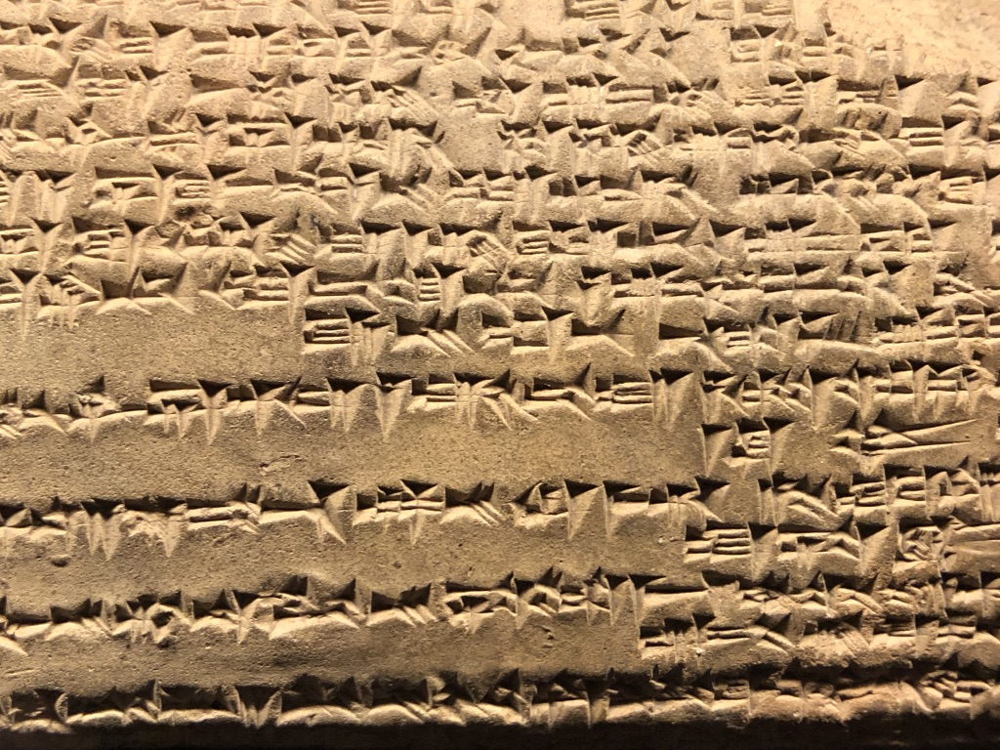
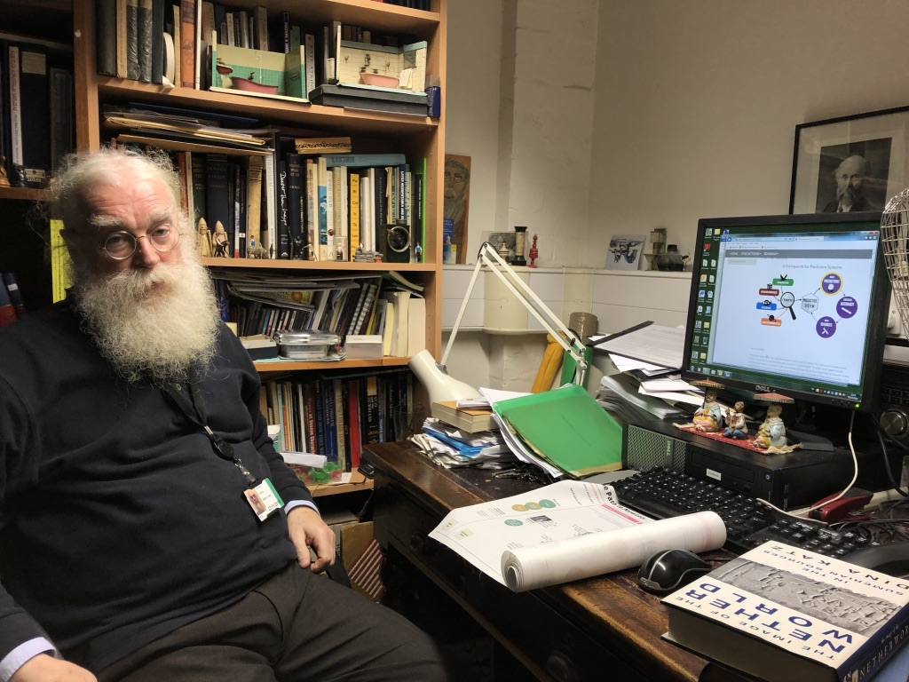
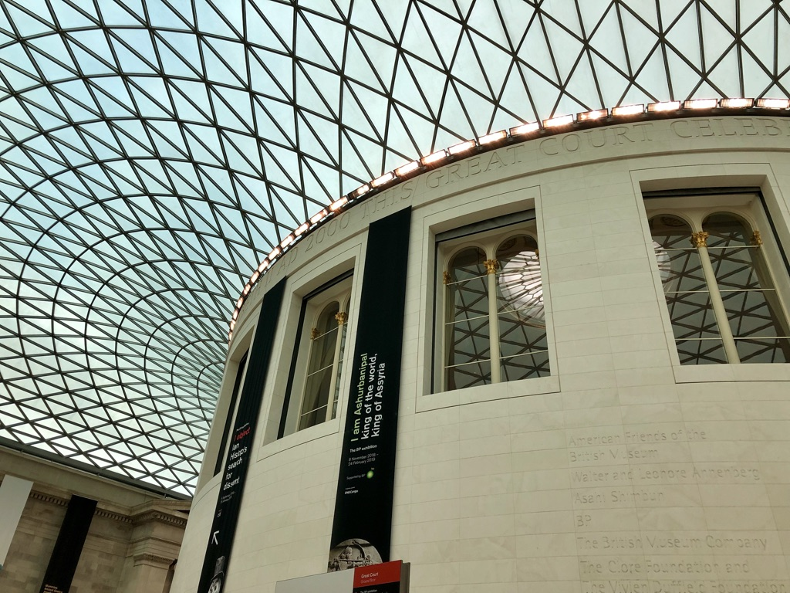
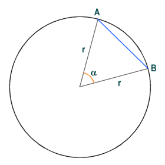
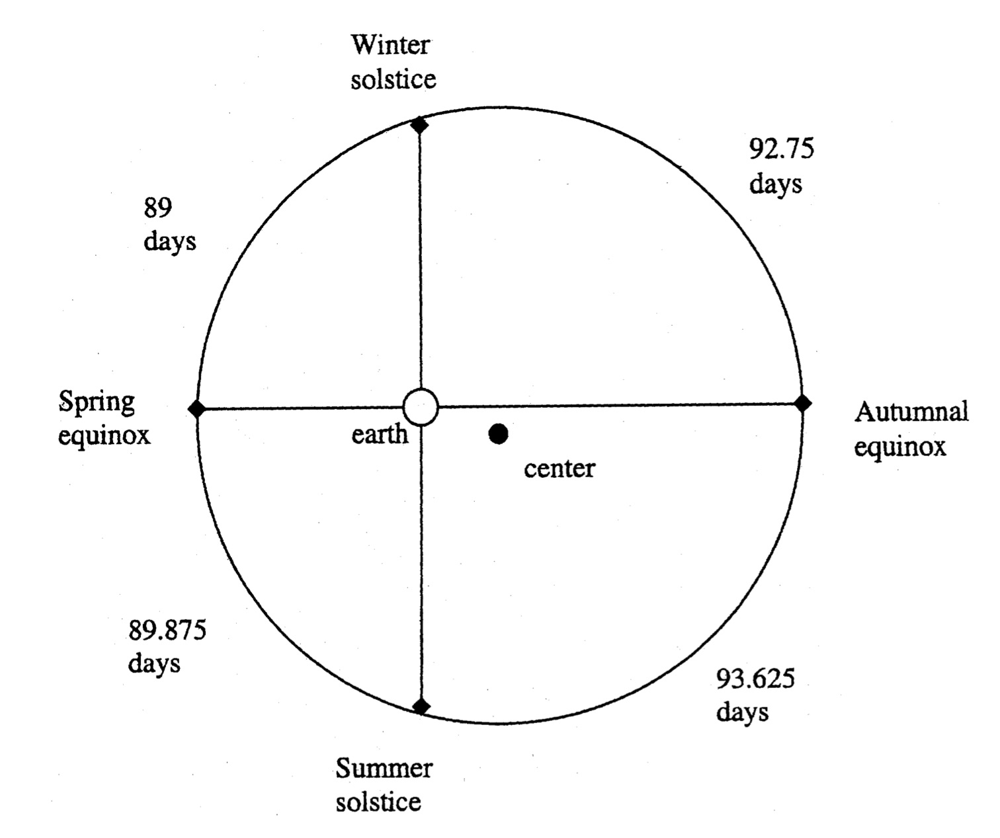
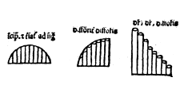
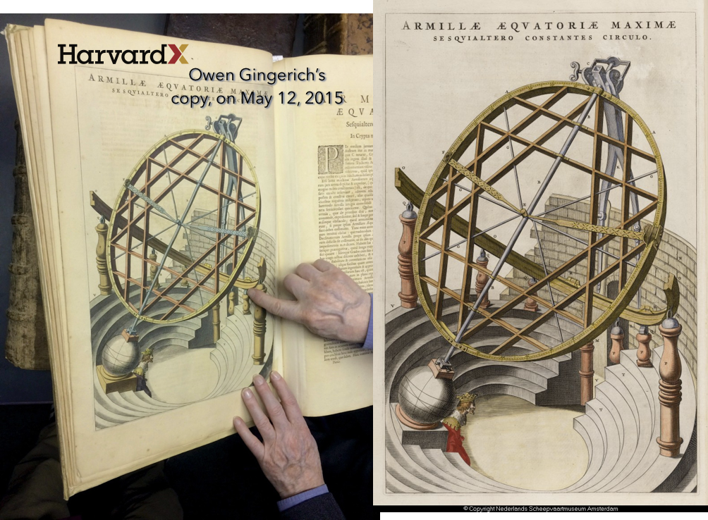
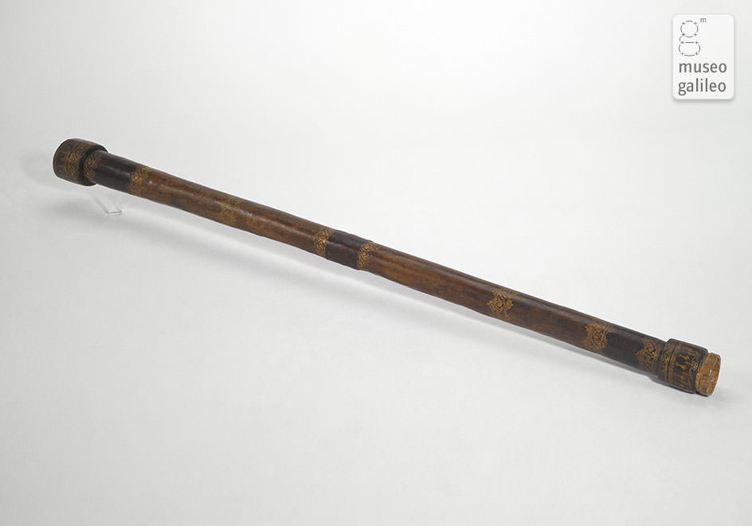
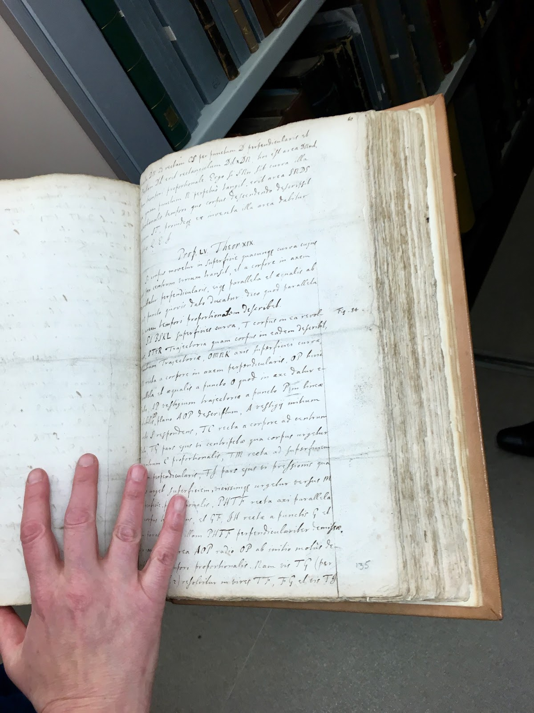
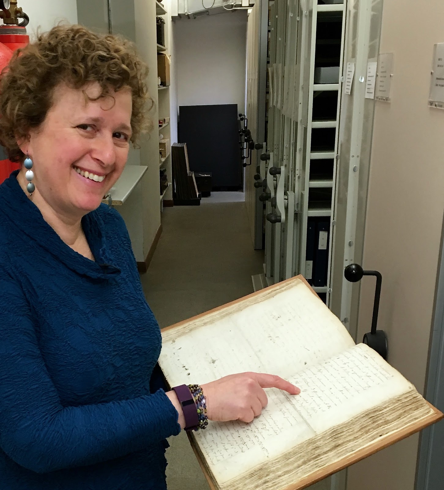

The Path to Newton
PREAMBLE:
Isaac Newton’s theory of gravity was truly revolutionary. For the first time in history, all motion -- from celestial bodies in Space to objects on Earth -- could be mathematically described and predicted. Newton’s theory necessitated new mathematics, Calculus, as well as a trove of empirical observations from which to derive and against which to test the math. The observations required instruments, the instruments required inventors, and the inventors required ideas, models, and conceptual systems that tried to make sense of the world and its physical phenomena. Over millennia, the ideas that led to Newton’s built on earlier ideas through critique, amendment, and refutation. Newton’s theory of gravity was not quite like the other ideas that drove our understanding of how the Universe moves forward, though--it was a monumental paradigm shift, from a world described by empirical rules, like those Kepler had discovered, to a world that could be predicted a priori--with no prior data about a system.
The Path to Newton is an attempt to demonstrate (some) of history behind how Newton knew what he knew and thought what he thought about motion. For many centuries, motion of objects in the Heavens (what we now think of as celestial mechanics) was considered categorically distinct from motion of objects on Earth (what was known as kinematics and, later, dynamics), so the Path focuses on philosophical and mathematical conceptions of the Universe and of how and why objects move on Earth, in order to explain how an ultimately unified theory of motion came to be.
Steps along the Path were facilitated by material technologies and greatly affected by religious doctrine, cultural exchange, and the migration and translation of ideas. The Path highlights the cultures, thinkers and tinkerers who wrestled ideas about motion into the stories, cosmologies, mathematics, tools, and data that lay before Newton as he worked. Each person highlighted along the Path stands in for a constellation of factors, often groups of people, that led to the historical recording or transmission of key ideas. While The Path employs these contributors as representatives and access points to seminal ideas and innovations necessary for a predictive theory of gravity, the immensity of the project means that much is left out. Keep in mind that “the” path we diagram here is really “a” path to Newton’s world-changing theory of gravity. The full story is much more complicated.
Babylonians (~1800 - ~600 BCE) - Hey, the cycles in the sky repeat. Let’s track them.
In Ancient Mesopotamia, interest in the changing appearance of the Sky was rooted primarily in calendars and astrology--in using the positions of celestial objects to glean hints about time and the future--rather than in a desire to understand why objects seemed to move. Ancient Babylonians tracked the motions of celestial bodies, creating catalogues, constellations, and distinctions between planets and stars as a result. Lucky for us, the Sumerians also invented an elaborate system of writing, cuneiform, which they used to record their findings. Even better, cuneiform was written on clay tablets, which last for thousands of years, and today thousands of tablets, many housed at the British Museum (see photos below), form the primary source of much of what we know about Babylonian Astronomy.
[Extra material: The images here, in order, show a closeup of sample of cuneiform writing, Dr. Irving Finkel, curator of cuneiform tablets at the British Museum in London, with whom Prof. Alyssa Goodman is consulting to learn more about Babylonian prediction (see Part 1 of PredictionX, including material on haruspicy (add link)), and the lobby of the British Museum showing the banner for the 2018 Ashurbanipal exhibit there, curated by Dr. Finkel. The British Museum is the home of the world’s largest collection of cuneiform tablets outside of Baghdad.]
 The Babylonian’s famous Three Stars Each star catalogue of the 12th century BCE and the mul apin tablets of 700 BCE provide summaries of observations up to the time of their creation. Through these summary compilations and from later Greek sources, we know that the Babylonians accumulated celestial observations over centuries and that their observations grew more accurate over time. Using their observations, the Babylonians divided the Heavens into constellation groups similar to the zodiac we use today, marked the rise and set times of many bright stars, tracked the ‘seven’ planets (the five visible planets plus the Sun and Moon), and therefore knew the evening star and morning star1 to be the same celestial body. Babylonian astronomers also observed that the paths and recurring appearances of planets were different from those of stars. As they watched them over the years, they realized that the movements of the planets, Sun, and Moon all passed through a specific band of the sky, what today’s astronomers call the “ecliptic.” In this way, the observation-based astronomy of the Babylonians laid a foundation for the Greek, Arabic, and European systems eventually inherited by Newton.
1 The planet Venus is the third brightest object in the sky (after the Sun and the Moon). Because of its position in our solar system as the second planet from the Sun, Venus's inner orbit ensures that it always appears close to the Sun in our sky. During the day, the brightness of the Sun makes Venus impossible to see, and so we only catch a glimpse of the planet in the morning before sunrise or in the evening after sunset. Venus orbits the Sun faster than Earth (about every 225 days), and so it 'passes' Earth every 584 days. When it does, Venus changes from being visible in the night sky to being visible in the morning sky. Likewise, when Venus speeds away and passes 'behind' the Sun, it transitions from being visible in the morning to visible at night. Combined with its magnificent brightness, Venus has been known for millennia as both the evening star and the morning star.
Thales (~624 - ~546 BCE) - Natural, not supernatural.
Thales, unlike his predecessors, believed humans could understand and explain nature without divine intervention. He is considered by Aristotle to be the founder of Ionian natural philosophy. Not a single piece of Thales’ writing survives, so all that is known of him comes by way of other sources. Through the writings of Aristotle and Seneca specifically, we learn that Thales believed that the world floated on water and that he used such an arrangement to explain earthquakes. If this evidence can be trusted, what becomes remarkable is the idea that phenomena can be explained by natural means instead of supernatural means (the prevailing paradigm in Thales’ day). From such a perspective, Thales anticipated classical Greek philosophy, which assumed the existence of, and sought, natural explanations, not supernatural or mystical ones, for physical phenomena like the motion of the celestial bodies and the movement of objects on Earth. Over centuries, the movement the Greeks began developed into “natural philosophy,” which is at the root of what we today call “natural science.”
Anaximander (~610 - ~546 BCE) - The Universe is WAY bigger than you might think.
Anaximander, a pupil of Thales, believed that the Earth and the Heavens around it were generated from a boundless eternity, or apeiron (ἄπειρον). Only a single verbatim quotation from Anaximander survives; however, a number of extant ancient sources cite him, and from these citations we learn about his work in astronomy and geography, and his advancement of a certain cosmogony.
According to Anaximander, there was a boundless Universe (or, more accurately, a “boundlessness”), out of which all things were generated and to which all things returned. This Universe (to use a modern word) was eternal and ageless. Given the nature of infinity, Anaximander posited that at any time there were a countless number of worlds that also arose from and returned to the infinite. In hypothesizing an open, infinite Universe, Anaximander was arguably the first known metaphysician.
It is thought that Anaximander conceived of the Earth as a cylinder -- demonstrated by his experience of a flat surface with a circular edge or horizon -- floating unsupported in dark air. This dark air obscured our view of a surrounding ring of fire, and only thousands of small holes, what we now know to be stars, allowed us to glimpse beyond the veil. Anaximander’s boundless Universe ran contrary to most ancient closed systems. Though ultimately incorrect, his conception was an important break with accepted ideas. Similarly, his notion that innumerable worlds came into and out of existence was another important divergence from the assumption of an immutable Heavens. Though based in metaphysical speculation, his ideas nonetheless offered an alternative paradigm that was, in a way, closer than most ancient systems to what we today think of as truth.
Pythagoras (~570 - 495 BCE) - If circles are perfect, spheres are sublime.
Pythagoras’ mathematical ideas were so novel and beautiful that his arguments for a spherical Universe persisted for two millennia.
It is difficult for historians to pinpoint exactly which of the many brilliant ideas attributed to Pythagoras indeed came from the man, his followers, or just the “Pythagorean” school of thought. For instance, both Pythagoras and his contemporary Parmenides are given credit for being the first in recorded history to posit the counterintuitive idea that the Earth is spherical in shape, not flat. Pythagoras is also thought to have developed ideas of mathematical ratios underlying all forms of existence. Such ratios, he argued, could be witnessed in musical harmonics as well as celestial movements. It was observed that the stars appeared to move in arcs across the sky, and, in adherence to Pythagorean ideals, these arcs were conceived as visible parts of perfect circles. In a Pythagorean view, celestial objects transcribe circles around a three-dimensional, spherical Earth, so the Heavens, and therefore the Universe, should be spherical as well.
Philolaus, a supposed Pythagorean of the fifth century BCE, is similarly shrouded in controversy, with some scholars going as far as to refute his existence. Nonetheless, his name and ideas were cited by Copernicus in his Revolutions of the Heavenly Spheres and Newton in his Principia. Whether Philolaus existed or not, he is credited with expounding a spherical theory of the Universe that displaced Earth from the center. Instead, the middle was occupied by a central fire (distinct from the Sun) around which the Earth, Moon, Sun, planets, and the sphere of stars all revolved at great speeds. It was hypothesized that the Earth always faced the same direction away from the central fire, which is why the fire was never seen.
According to contemporary observation and experiment, these ideas of Pythagoras and Philolaus are incorrect. However, the concepts of a spherical Universe, underlying mathematical principles (e.g. spherical geometry), and models in which Earth’s motion can explain apparent celestial movement were crucial to the formulations that would eventually disprove these original ideas.
Parmenides (~515 - ~450 BCE) - Question all that you “see”.
Parmenides is credited with forcing Greek thinkers to question several fundamental assumptions, even seemingly simple ones about the very existence of motion.
Parmenides was the founder of the Eleatic school of ancient philosophy, a tradition that questioned much of the logical foundation of (what became known as) “pre-Socratic thought.” What is known of Parmenides’ ideas comes to us mainly through commentaries by Plato, Aristotle, and Theophrastus, as well as fragments of his only extant work.
In a poem, Parmenides lays out his doctrine through the voice of an unnamed goddess whom he visits in a chariot driven by the daughters of the Sun. The goddess explains that there are two ways of questioning the world: one that assumes the existence of being and another that assumes the existence of non-being. Non-being, she asserts, is impossible to consider (for any consideration immediately takes a form of being or is constructed in antithesis to being) and so only the first assumption is suitable for philosophical inquiry. The goddess dismisses the dialectic of being and non-being as folly and warns against the deception of the senses. In other words, mortal interpretations of the phenomenal world mistake appearance for the world itself. The world and all being must be complete, changeless, and immovable. In this sense, all change, and therefore all motion, is an illusion.
Parmenides’ most famous disciple, Zeno, illustrated Eleatic philosophy in a series of paradoxes, some of which have continued to confound thinkers into modernity. The paradox of Zeno’s Arrow2 comes to us by way of Aristotle’s Physics (Book VI, Chapter 5):
Consider how you might differentiate an arrow in motion from an arrow that is somehow motionless in the air if you could only view each for a moment (or, as we might think of it today, if you could only view a photograph of each). Zeno starts with an assumption that time can be divided into units beyond which further division is impossible. This unit of time is called a moment. At any moment, each arrow occupies one and only one place, and so, in any moment, both arrows are motionless. Since the moment is the smallest division of time, there is no time for the arrow to move; it is simply where it is. This holds true for every moment in the flight of the “moving” arrow, and so neither arrow actually moves. The motion is a trick of the senses. In this way of thinking, nothing actually moves. All motion is illusion.
This paradox remained a philosophical puzzle for nearly two thousand years. The questions it introduced about the division of time and space into smaller and smaller segments laid the foundation for theories of motion as well as the mathematics that developed into Calculus, which relies on limits where divisions in time and space become infinitesimally small. In fact, only with the invention of Calculus could a mathematics quantitatively describe continuous change and therefore resolve this paradox.
2 Beyond the paradox of motion, Zeno is also credited with several other paradoxes.
Anaxagoras (510 - 428 BCE) - Motion needs a little push.
Anaxagoras’ view of the Universe included a force responsible for movement, a Sun that shone with its own light, and a Moon lit by the Sun’s light. He claimed that the Moon did not shine its own light, but instead was illuminated by the fiery stone of the Sun. He used this idea to explain lunar eclipses, which he correctly claimed occurred when the Moon was full and the Earth blocked the light of the Sun. Likewise, solar eclipses occurred when the Moon was new and blocked the light of the Sun from reaching Earth. While Anaxagoras’ description of eclipses strikes modern readers as familiar, it is worth noting that the conception was offered within a geocentric Universe, from a flat Earth supported by the element Air, and about celestial bodies whose sizes, distances, and compositions were all as wrong as his eclipse theory sounds right.
Overall, Anaxagoras’ cosmogony was similar to that of Anaximander. However, he introduced a motive force he called Mind to account for motion as well as the formation of Earth and the celestial bodies out of the infinite. Anaxagoras held that as the Earth began to take shape, the stuff that became the stars, Moon, and Sun were torn from it, carried away by the aether,3 and ignited by friction. Anaxagoras taught that the Sun was actually a fiery, red-hot rock, an idea for which he was supposedly charged with impiety. Though his use of Mind as an initiating force was speculative, it introduced a governing principle into the Universe. This idea that an underlying truth or force could universally determine behavior rooted itself in increasingly scientific theories and was foundational to Newton’s gravity nearly two millennia later.
3 The aether (or ether) was the substance that was thought to fill the heavens and through which all celestial objects moved. What air and water were to the terrestrial realm, the aether was to the celestial realm. The existence of the aether was largely accepted even into the 19th century -- though by this time it had conceptually changed a great deal -- and it was not until the Michelson-Morley experiment in 1887 that its existence was experimentally disproven.
Democritus (~460 - ~370 BCE) - Stuff on Earth and in the Heavens is all the same…just atoms.
Democritus taught that the Universe was made of empty space (void) and invisible, indivisible, particles called atoms that existed in innumerable quantity in infinite directions. As such, he was one of the first philosophers of a school of thought known as Atomism, which is thought to have begun with his teacher, Leucippus. Atomism continued on for centuries in Greek and Roman culture. In fact, in his book The Swerve, Stephen Greenblatt recounts the discovery of a poem (On Nature) by Lucretius Carus (99-55 BC), written about 300 years after Democritus died, that describes a material world in which everything is composed of minute particles, equivalent to Democritus’ “atoms.”
In On Generation and Corruption, Aristotle wrote that the views of Atomism were formed as a reply to Parmenides and the Eleatics who held the idea of the void to be impossible and all movement to be illusion. In modern parlance, followers of Parmenides would say that if a void exists, then it is “a thing,” so it cannot be nothing. In contrast, the Atomists posited the void as primary to existence and necessary to make any kind of movement possible. In this view, all matter on Earth, and all matter in the Universe, no matter how different in quality and quantity, was made of the same irreducible building blocks. Between all of these building blocks were various amounts of empty space. This empty space allowed some objects to move through others: an arrow through air, a hand through water, an axe through a block of wood. Whereas most thinking at the time, and Aristotelian doctrines soon thereafter, considered all substance and time to be continuous, Atomism presented matter as discrete.
It is important to point out that even in his Principia, Isaac Newton wrestled with what to do about voids and space. His solution, which was mathematically helpful but ultimately shown by Einstein to be unnecessary (and incorrect), was to posit the idea of “absolute space” and “absolute time,” as explained in the passage from the Principia shown here. Einstein unified space and time in his theory of general relativity, which resolved many of the problems faced but not solved by Democritus, Aristotle, Copernicus, Newton, and countless other natural philosophers.
While Atomism was based primarily on speculation by philosophers, rather than experiments, it did introduce the idea that terrestrial and celestial substance was ultimately made of the same stuff. By using the composition of matter to explain motion, the Atomists also opened the possibility that terrestrial and celestial motion could be explained by the same underlying premises, an idea that did not gain wide acceptance until Descartes and Newton nearly two thousand years.
Plato (~427 - ~347 BCE) - Symmetry rules.
According to Plato, an object is moved through a medium (for example, air or water) by the medium itself. In his Timaeus, Plato claimed that an object is passive, and that the medium surrounding an object is the active agent responsible for movement. Plato’s greatest student, Aristotle, strongly disagreed. (Worry not, though, Plato and Aristotle, and so many who came after, agreed completely that symmetry and beauty are essential parts of the Universe, and of understanding it.)
Consider the example of an arrow shot from a bow, which is often used to demonstrate ideas about theories of motion. In Plato’s view, as the arrow and bowstring move through the air, they set the air in motion so that as soon as the arrow leaves the hand of the archer, the air (medium) continues to move the arrow (object). Plato argued that the air created a circular thrust, or mutual replacement, in which the air at the tip of the arrowhead moved to the back of the fletching and took the space that would otherwise be left empty by the arrow’s passing. The air from the front that replaced the air in back thus propelled the arrow forward. Though Plato did not explain why the arrow would cause a circular motion of the air (as opposed to, say, pushing the air forward in front of it), such a movement of the medium prevented a(n abhorred) void or vacuum from forming behind the object. Since vacuums were considered, at least by Plato and his followers, to be impossible, it could be argued that the air had to fill in the space behind the arrow in order to uphold the conditions of nature.
Eudoxus (390 - 337 BCE) - It’s spheres all the way down.
Eudoxus was the first Greek known to put forth the idea of concentric spheres and is credited with constructing the first mathematical model of the Universe. He supposedly did so in response to a question posed by Plato, who asked if anyone could explain the odd motions of the planets using an orderly and uniform model. Eudoxus, in order to explain the motions of not just the planets but the Sun, Moon, and stars as well, utilized 27 spheres -- 3 for the Moon and Sun each, 4 for each of the five visible planets, and 1 for the stars. Each sphere moved at a constant, though different, rate and in a unique direction. Callippus, another Greek astronomer, increased the number to 33 to account for small discrepancies, and Aristotle brought the total up to 55.
The concentric spheres rotating around the stationary Earth explained much of the motion of the Heavens; however, there were still some anomalies. Comets, for instance, did not appear to be cyclical and immutable like the other objects in the sky. For this reason, they were considered to exist somewhere below the sphere of the Moon, closer to Earth. Also, while spheres moving around a static Earth explained celestial movement, they did not account for the planets’ apparent change in brightness. Perfect spheres with Earth at the center implied that the planets were always the same distance away, in which case their brightness should remain constant, but this is not the case. While the static Earth and perfect concentric spheres marked a first and major step in mathematical model building that could explain observation and experience, it would take centuries, or, in the case of comets, millennia, for models to account for the myriad celestial phenomena known to the Greeks.
To refute Plato’s ideas about motion (known as antiperistasis), Aristotle invoked an apparent contradiction having to do with cause, effect, and time. If the movement of air behind the arrow was immediate, and it caused the arrow’s movement, then its effect--the arrow being moved--happened at exactly the same time, thereby defying the principle of continuity of motion (in which cause comes before effect). If the movement of air was not instantaneous, then a vacuum would momentarily exist, and this was unacceptable since Aristotle also considered vacuums impossible. (The formulation “Nature abhors a vacuum” is typically attributed to Aristotle.) To solve this causality problem, Aristotle assumed that any motion must be the result of a mover in contact with whatever is being moved. He also exchanged a single cause of movement (the circular thrust of the medium) for a succession of causes. For Aristotle, while the archer releasing the arrow could be considered the prime mover, the act of shooting would convey the power of motion to the air -- more specifically, a certain part of the air. This part of the air, or intermediary, would propel the arrow forward and set the next intermediary in motion, which would continue to move the arrow and set in motion successive intermediaries.
Aristotle had a grand theory of motion, based on the concept that different types of matter had each their “natural place.” He subscribed to the prevailing theory of matter which held that all Earthly substance was comprised of the four elements: earth, air, fire, and water.

To these Earthly elements, Aristotle added a fifth, aether, reasoning that the celestial bodies, being immutable and perfect, could not be made of Earthly substances and must therefore be made of something different, something incorruptible. Building on the Pythagorean idea that the Universe was spherical, Aristotle arranged the world into concentric spheres (see diagram) and used the elements to help explain the way things are and how they move on Earth. The natural place of the “heavy” elements earth and water was at the center of the Universe, and the natural place of the “light” elements air and fire was above the ground. Accordingly, objects made mostly of earth and water moved toward their natural place at the center of the Universe, and since the Earth was thought to occupy this central location, these objects moved toward the center of the Earth. This explained why rocks and water fell downward. Similarly, objects made mostly of air and fire rose toward their natural place above the surface of the Earth. Different objects were made of different ratios of elements, and different compositions had different characteristics. The more earth in an object, the heavier it was, so the faster it would fall. Because earth was heavier than water, rocks and other objects made of earth fell through water.
In Aristotelian physics, an arrow shot through the air was considered forced or unnatural motion, since arrows don’t naturally fly through the air on their own. An arrow, made of wood, metal, feather, and sinew, was mostly comprised of the element earth. So, as an arrow released from the bow of the archer and was moved through the air, it simultaneously sought to return to its natural place, down toward the center of the Earth. In Aristotle’s view, this natural movement, along with the resistance of the air that moved the arrow through it, explained why arrows shot from bows eventually fell and remained still on the ground. Noteworthy, too, is the distinction between resistance (or external forces) and an object’s inclination to move toward its natural place, a false and misleading distinction which persisted for nearly two millennia.
Aristotle (384 - 322 BCE) - [hearts] Circles, spheres, beauty, eternity
Aristotle built on his predecessors’ work to articulate a worldview in which the Earth was the static center of the Universe around which the other bodies -- the Sun, Moon, planets, and stars -- all revolved. These celestial bodies were thought to move in perfect circles and to inhabit perfect spheres (cf. Eudoxus) that moved at different rates around the Earthly center of the Universe. This organization of concentric celestial spheres explained the cyclical arcing motions of the celestial bodies and the differences between the movement of the stars from the Sun, Moon, and planets. In using the concepts of perfection, immutability, and natural place -- in conjunction with their opposites -- Aristotle formalized a (debatably) self-coherent system that accounted for the compositions, qualities, and motions of all celestial and terrestrial objects. The ability of Aristotle’s physics to explain so many physical phenomena accounted for its wide and long-lived acceptance.
From the documentation that survives, it appears that Aristarchus was a lone voice in antiquity arguing for a Sun-centered Universe (what we now call a heliocentric system).
What we know of Aristarchus' heliocentrism comes by way of a letter written by Archimedes, called The Sand Reckoner. In his letter to King Gelon, Archimedes set out to express astronomical numbers, using the multitude of grains of sand on the planet and the size of the Universe as quantities to reckon or count. In discussing the size of the Universe, the structure of which was thought to be concentric spheres centered around Earth, Archimedes made reference to a far larger conception put forth by one “Aristarchus of Samos”.
Archimedes explained that Aristarchus claimed the Sun occupied the center of the Universe, and that (while the Sun and the fixed sphere of the stars remained still) the Earth revolved in a circle around the Sun. Moreover, Aristarchus (correctly!) believed the stars were so far away that the ratio of the distance from the Earth to the stars was akin to the ratio of the magnitude of the starry sphere’s center to the magnitude of its surface. Archimedes pointed out that this “ratio” was impossible. The center of a sphere has no “magnitude,” so one might conjecture that the distance Aristarchus proposed was beyond counting. And yet, Archimedes set out to do exactly that. He asked the king to imagine that this enormous starry sphere of Aristarchus was made of grains of sand. That was the number he proposed to reckon, the number of grains of sand it would take to cover the Universe.
The only known surviving work of Aristarchus is a geometric proof in which he used the near-right-angle position of a half moon and the angular sizes of the Sun and Moon to estimate the distance between the Earth and the Sun. The accuracy of his geometry was led astray only by his inability to precisely measure the exact angle subtended by the Moon at its first or third quarter. Aristarchus’ ingenuity in combining mathematics with observation make it all the more unfortunate that his treatise on the Sun-centered Universe has been lost to the sands of time.
Euclid (~300 BCE) - I can prove it!
Euclid was an Alexandrian whose treatise, Elements, is a landmark in mathematics to this day. The text focuses mainly on planar and solid geometry (today known as “Euclidean” geometry), and it presents its mathematics deductively through a collection of definitions, axioms, and proofs of the different theorems and constructions. While the formalization and transmission of geometry was itself essential for the astronomical work that paves the Path to Newton, Euclid’s Elements is specifically significant for its treatment of circles and chords.
A chord is a line segment whose endpoints lie on a curve -- in our case, on the circumference of a circle. The arc of the circle that lies between the two endpoints of our chord AB is said to be subtended by the chord. The chord, and the arc it subtends, both subtend the same central angle, noted here by the Greek letter alpha (α). Thanks to Euclid, the Greeks knew that the central angle subtended by a chord was proportional to the length of the chord and the diameter of the circle. From this, Greek mathematicians derived what is known as a chord function, which gives the length of a chord of a circle subtending a known central angle. It was the only trigonometric function they knew, but they put it to great use. The chord function was crucial in measuring the position of stars and compiling star catalogues, for calculating the lunar month and the length of the year, for deriving the size of the Moon, and for other astronomical breakthroughs that constituted the foundations of celestial mechanics.
Hipparchus (~190-120 BCE) - I’m not so sure the Earth is exactly in the center?
Hipparchus was perhaps the greatest observational astronomer of Ancient Greece or Rome. Among many other observational and mathematical achievements, Hipparchus is credited (by some) with creating the first star catalogue, inventing a planispheric precursor to the astrolabe, and with discovering the precession of the equinoxes.
Hipparchus accrued nearly twenty years’ worth of observations, spanning from 147 to 127 BCE. As he watched the night sky on the equinox over the course of years, he realized that the stars seemed to move westward from year to year. Today, we know that this gradual change in stellar orientation is due to a slight wobble in the rotational axis of the Earth that completes a rotation every 25,772 years or so. However, in Hipparchus' day, the Earth was considered stationary, and so it was assumed that the heavens themselves were shifting in relation to the Earth. This gradual change was called the precession of the equinoxes.4
The seasons, which are demarcated by the solstices and equinoxes, also introduced a problem for which the chord became important. If the Earth was in the center of the Universe and the Sun revolved around it at a uniform pace, then one expected the seasons to all be the same length. However, astronomers observed that the seasons varied in length by upwards of a few days. This observation seemed to indicate that either celestial motion was not uniform or that the Earth was not exactly in the center of the Universe. Chords were essential in approaching the latter possibility. If you imagine the Sun going around the Earth with points on the circumference its orbit marking the equinoxes and the solstices (see diagram), then each season forms an arc of known length. Given the lengths of the arcs, Greek astronomers sought to derive the lengths of the corresponding chords so that the position of the Earth could be calculated.
Hipparchus not only used chords to calculate Earth’s position offset from the center of the Universe, he also constructed a table of chords to aid him with this and other astronomical puzzles. This made him the first Greek to formulate astronomical tables based on geometric methods. These tables did more than help to answer questions about astronomy. They also formalized a relationship between celestial phenomena and the mathematics used to describe them, and instantiated this relationship in models that explained observations of the physical world.
4 The equinox is a term that describes the two days of the year when the plane of Earth's equator passes through the center of the Sun. On these days (usually March 20 and September 22-23), every place on Earth, from the north to the south pole, receives twelve hours of sunlight (though not at the same time), and the Sun appears to rise directly east and set directly west. For these reasons, the equinoxes are useful demarcations for creating a calendar, and today they mark the transition between winter and spring as well as between summer and fall.
Ptolemy (~100 - ~170 CE) - Circles are the best! We just need more!
Ptolemy used what are called epicycles, equants, and eccentrics to address the planets’ seemingly erratic motion in the Sky and to devise one of the most important astronomical systems in history. He recorded this system in his monumentally influential text, the Almagest, which was the authoritative astronomical treatise for over a millennium.
Until relatively recently, what we now call the “Solar System” was thought to be the entire Universe, and Ptolemy’s model, like most models before his and many afterwards, assumed Earth to be at the center of this Universe. With Earth occupying a central position (what is called a geocentric system), and without our modern appreciation of Newton’s gravity or Kepler’s elliptical orbits, it was very difficult to explain the odd motions of the planets as they appear to move across the Sky. The planets can seem to speed up, then slow down, to grow brighter and then dimmer, and they even appear to move backward in the Sky, what we now call retrograde motion. Indeed, the word “planet” stems from the Greek verb πλανάω, which means “to wander.” The concentric spheres of Eudoxus and Aristotle attempted to account for these motions, but they failed to explain the changing luminosity of the planets. To accommodate inconsistencies, models of celestial motion grew more and more complicated.
In order to address the apparent motion of the planets, Ptolemy used years’ worth of observations, including a star catalogue that is often attributed to Hipparchus (c. 190-120 BCE). This catalogue contained over 1,000 stars, and it allowed Ptolemy to compare his model to many more observations than he could ever have made in his lifetime. Ptolemy also relied on the trigonometry of ancient Greek mathematicians and on the work of Hipparchus in particular (in fact, much of Hipparchus’s work is preserved through Ptolemy’s writings). This combination of mathematical modeling and empirical observation is what made Ptolemy’s system so accurate and allowed him to improve upon previous solutions to this problem of the planets’ apparent motion.
One previous solution had the planets moving in small circles as they completed their larger circular orbits around the Earth. In this model, the larger orbit was called a deferent and the smaller circle the planets transcribed, centered on the deferent, was called an epicycle. Another workable Earth-centered solution moved the center of planetary orbits away from the Earth to a slightly different point, known as an eccentric. Ptolemy, through his Almagest, is often associated with these theories; however, Hipparchus and his predecessor Apollonius (c. 250-190 BCE) were the first known astronomers to formalize these geometric models. From Ptolemy’s discussion, we learn that Apollonius and Hipparchus were aware of the equivalence of the epicyclic and eccentric models, and were applying geometry in an attempt to explain celestial phenomena and perhaps even determine mathematical parameters based on observations.
The problem with the epicyclic and eccentric theories was that they assumed and therefore predicted a constant rate of retrograde motion, which is not what is observed. Ptolemy refined these theories with a combination and a twist. He kept the epicycles and the deferents and kept the Earth just off-center, in an eccentric position. Ptolemy then added a point opposite Earth, on the other side of the universal center, which he called an equant, and the equant became the point from which a hypothetical observer would see the motion of the planets as uniform. In this way, uniformity was preserved, though just not observable from Earth.
Using the epicycle, eccentric, and equant, Ptolemy was able to create a complicated and mathematically sophisticated model that aligned with observations and predicted planetary motion to a previously unachieved accuracy. Though questioned and critiqued by Arabic scholars for more than half a millennium, Ptolemy’s model was generally accepted for nearly 1,300 years.
Aryabhata (476 - 550 CE) - With one little function, I’ll give you the Moon!
Aryabhata was undoubtedly one of the most prominent figures in ancient Indian astronomy and mathematics,5 and is responsible for what is thought to be the world’s first table of sine functions. He is credited with writing several astronomical treatises, one of which, called the Aryabhatiya, was preserved through its translation into Arabic by al-Khwarizmi in the 9th century and possibly through an earlier Pahlavi text known as the Zij al-Arkand. The Aryabhatiya was a combination of mathematics, astronomy, and philosophy. In it, Aryabhata suggested that the planets, the Moon, and other celestial objects are lit by Sunlight, and he further showed how solar and lunar eclipses could be explained by particular positional relationships of the Earth, Sun, and Moon. Aryabhata calculated the length of the sidereal6 year and the circumference of the Earth with results fairly close to modern values. He even proposed the rotation of our planet (though his explanation invoked a notion of cosmic winds). In the Aryabhatiya, Aryabhata measured the day beginning at Sunrise; however, in another text he proposed a midnight system, similar to the one we use today.
Absolutely essential for our Path to Newton was Aryabhata’s development of a table of sine functions. While the chord function had been used and formalized by Greeks like Hipparchus and Ptolemy, the sine and cosine functions7 were Indian innovations, and their earliest known use is by Aryabhata. Sine functions (originally thought of as “half-chords”) allowed Aryabhata, and subsequent astronomers, to make more and more accurate predictions about celestial bodies by calculating their movements in smaller and smaller increments of time. As these time increments approached what we now think of as zero, the amount of movement got smaller and smaller, allowing for very precise predictions of, say, a lunar eclipse. This use of the sine function was a crucial step toward the mathematics of Calculus, which was imperative for Newton’s predictive theory of gravity.
5 Even today, at the Inter-University Centre for Astronomy and Astrophysics in Pune, India, Aryabhata’s statue stands alongside those of Galileo, Newton, and Einstein.
6 Astronomers make the necessary distinction between a “solar year” as perceived on Earth as the time between equinoxes, and a “sidereal year,” measured with respect to the fixed stars. Today we understand a sidereal year to be the “true” length of time it takes for the Earth to make one orbit around the Sun. The (slight) difference between solar and sidereal time is caused by the slow precession of the Earth’s spin axis. The effect (although not the cause) of that precession (historically called the “precession of the equinoxes”) was first recognized by Hipparchus.
7 Sine and cosine are thought to be derived from the Sanskrit words jyā and koti-jyā. ‘Sine’ is believed to be a Latin mistranslation of the Arabic word jiba, which was a transliteration of the Sanskrit word for a half-chord jyā-ardha.
John Philoponus (~490 - 570 CE) - Aristotle is wrong about space, time and matter.
The Alexandrian theologian John Philoponus8 proposed a self-exhausting theory of motion that diverged from accepted Aristotelian views. His critique hinged on Aristotle’s assumptions that 1) motion must be imparted by something and 2) that whatever imparts motion must be in contact with whatever is being moved. To satisfy these requirements, in the case of an arrow shot from a bow, Aristotle employed the air to propel the arrow along. Philoponus rejected this idea and argued that the archer imparted upon the arrow a self-exhausting force (incorporeal motive enérgeia). In other words, the drawn and released bowstring gave the arrow a certain and finite amount of motion that, without any restrictions or resistance, eventually ran out, causing the arrow to fall to the ground and be still like a car that ran out of gas. Philoponus’ ideas are emblematic of, or perhaps even began, a shift in thought about how objects move that marked an important pivot toward what would eventually be called inertia.
8 Philoponus is sometimes credited with carrying out one of the first (albeit nearly 900 years later) and most thought-out critiques of the Aristotelian worldview. Other historians suggest that Philoponus’ critique is more of a technical revision that still abides by Aristotle’s theories of matter and overarching conceptions about motion.
John Philoponus (~490 - 570 CE) - Aristotle is wrong about space, time and matter.
John Philoponus proposed the radical idea that the objects in the heavens might not be so different from the objects on Earth. This notion of similarity grew out of observations that different stars have different levels of brightness and different colors of light (for instance, the star Betelgeuse in Orion appears reddish while many others appear white). He compared these differences to fires on Earth, which achieve different colors based on the fuel that’s burned, and hypothesized that different celestial bodies appear to be different colors based on their compositions. This idea not only went against the Aristotelian notion that all celestial bodies were made of a single element, aether, but it also asserted that if celestial bodies had differing compositions, then they were also subject to decomposition, which meant they were not the immutable perfections of Aristotle. If the compositions of celestial bodies were distinct, what they still had in common, according to Philoponus and seemingly in anticipation of Descartes, was three-dimensional extension, or a general physical existence in three-dimensional space, just like objects on Earth.
Philoponus enumerated more repercussions of his contradictions of Aristotle. If the celestial bodies were in fact mutable, then their motion was finite (though perhaps incredibly long in duration), and if their motion was finite, then it needed a beginning as well as an end. Philoponus attributed this motion to God, who, at the time of creation, imbued the celestial bodies with an internal motive force that ran by itself and eventually wound down. This explanation for the movement of the Heavens used the same theory that explained the flight of the arrow; just as the bow imbued the arrow with a self-exhausting, incorporeal motive enérgeia, or force, so too did God imbue the celestial bodies with a self-exhausting motive force. In this manner, Philoponus suggested a metaphysical unity of celestial and terrestrial motion. However, it was not until Descartes and Newton that anyone attempted to (in Newton’s case successfully) mathematically unify the two.
8 Philoponus is sometimes credited with carrying out one of the first (albeit nearly 900 years later) and most thought-out critiques of the Aristotelian worldview. Other historians suggest that Philoponus’ critique is more of a technical revision that still abides by Aristotle’s theories of matter and overarching conceptions about motion.

Varahamihira (~505 - 587 CE) - I must gather more information for better Astrology, and I shall share what I learn!
Varahamihira was an Indian astronomer, mathematician, and ardent astrologer whose book the Pancasiddhantika (“The Five Astronomical Canons”) was a compendium summarizing five ancient astronomical systems. The text was divided into five siddhantas, or treatises, each dedicated to one of the five systems: Surya, Romaka, Paulisa, Vasistha, and Paitamaha. The Surya Siddhanta, Vasistha Siddhanta, and Paitamaha Siddhanta articulated ancient Indian astronomical systems dating back, in written form, to around 700 BCE and drew on Vedic traditions as far back as 1400 BCE. The Romaka Siddhanta and Paulisa Siddhanta were of western origin (though some scholars argue that these astrological traditions were actually Vedic derivatives transformed through Hellenistic astronomers and eventually returned to the Indus Valley). The Romaka Siddhanta is thought to arrive in India by way of a Roman work, and the Paulisa Siddhanta is considered to derive from a Greek living in Alexandria. Varahamihira did more than collect and report on these systems -- he used them to improve his astrology as he incorporated his knowledge of astronomy into treatises on augury and the casting of horoscopes. His Brihat-Samhita, for example, is an encyclopedic text focusing mostly on divination but covering other topics from astronomy and planetary motions to architecture, agriculture, and social relations. The work of Varahamihira is a testament to the transference of knowledge in the ancient world, and, important for our Path, his compilations allowed generations of scholars to access astronomical explanations and calculations that might otherwise have been separated by continents.
Brahmagupta (~598 - ~668 CE) - Who knew nothing could be so useful?
Brahmagupta was an Indian astronomer and mathematician who recorded rules for arithmetic using zero as a numeral.
Brahmagupta’s main astronomical work, known as the Brāhmasphutasiddhānta (Opening of the Universe), builds on the mathematical and astronomical works of his predecessors to develop an original model of the Universe where the Moon is closer to Earth than it is to the Sun. With this arrangement, Brahmagupta (correctly) explains Moon phases as changes in the Moon’s positional relationship to the Earth and the Sun.
Brahmagupta’s Brāhmasphutasiddhānta also presented zero as a numeral in its own right. While Babylonian mathematics included a concept for zero, zero was not employed in their number system. Other mathematicians had used zero as a placeholder, like Aryabhata in his calculation of square and cube roots, but Brahmagupta went further. He established arithmetical rules for adding and subtracting zero from positive and negative integers, and vice versa. Moreover, Brahmagupta presented rules used to multiply and divide by zero. Division with zero was problematic -- a problem which was not worked out for centuries -- but overall Brahmagupta’s formalisms concerning zero were essential to all the math on the Path to Newton after his time.
Though the trigonometric functions of sine and cosine were introduced earlier and can be seen in Aryabhata’s Aryabhatiya, zero was necessary for the math behind the infinite series (approximations) that these functions allowed. In order to accurately predict the motions of celestial bodies, an astronomer needed to calculate the movement of the bodies in smaller and smaller increments of time. As time increments got smaller, they approached zero, and the formalization of zero as a numeral was crucial for developing the mathematics that allowed for what one day became known as Calculus.
In the 770s, an Indian delegation traveled to the Abbāsid court of al-Mansur in Baghdad and worked with Arab scholars to translate Sanskrit texts like the Brāhmasphutasiddhānta into Arabic (usually with an intermediary translation from Sanskrit into Pahlavi and Pahlavi then into Arabic). The resulting translated compilation, Zij al-Sindhind, was a major step in the cross-cultural exchange that defined the Golden Age in medieval Arabic science and contributed to the foundations of the later European Renaissance.
The Zij al-Sindhind was only one small piece of the larger “Translation Movement,” in which the Abbāsid scholars sought to translate the wisdom of earlier civilizations including what we now think of as the Greeks, Persians, and Indians. This movement is thought to have begun with the Abbāsid caliphate in the mid-8th century CE, and it involved a massive influx of money from wealthy patrons and support from the caliph himself. Scholars believe that the impetus for this movement can be traced to a confluence of factors including the study of astrology and the desire to better understand the future portended by celestial phenomena; political alliances with Persian nobility and the drive to incorporate Persian culture; and the advent of papermaking, which was learned from the Chinese. Initially, Abbāsid scholars focused on interpretations of the Qur’an. However, as the benefits of new ideas spread to areas like finance, medicine, engineering, agriculture, and architecture, the translations increased in earnest and became integral to the Abbāsid culture itself.
As translators moved beyond the ken of religious texts, the secular works of the ancient Greek philosophers became highly sought after. Greek texts were originally accessed in Syriac and then translated into Arabic, but as the demand for better translations increased, these texts were translated directly from Greek into Arabic. The medical works of Galen, the mathematical treatises of Euclid, the astronomical writings of Ptolemy, the philosophy of Plato, and the physics of Aristotle all played important roles in the translation process and the subsequent scholarship, culture, and understanding of the world. The Translation Movement arguably lasted until well past 1000 CE, and by the days of the “House of Wisdom” (in the late 8th century CE), Arabic astronomers had already begun to make important findings of their own, many of which contradicted the highly esteemed ideas of Aristotle and Ptolemy.
The Translation Movement did more than just ensure the transmission of ancient ideas, mathematics, and philosophies across continents and centuries (though this alone would have been monumental). The translators, scholars, and thinkers whose labors comprised the Translation Movement added new interpretations, critiques, and solutions that constitute some of the most important ideas in the history of science.
Al-Battani (~858 - 929 CE) - Years from now, Copernicus will love me
Al-Battani is widely considered one of the greatest Arabic astronomers, and certainly a preeminent astronomer of the Middle Ages. He accumulated over four decades of observations, which were used to publish his Kitab az-Zij, or Book of Astronomical Tables, and were extensively employed by Copernicus, Brahe, and Kepler in their own astronomical works. Many of al-Battani’s achievements were technical: the eccentricity of the solar orbit, the Moon’s mean longitudinal motion, the apparent diameters of the Sun and Moon, the precession of the equinoxes, and the precise length of the solar year, which al-Battani calculated to be 365 days, 5 hours, 46 minutes, and 24 seconds -- only 2 minutes and 22 seconds off from contemporary measurements. Al-Battani’s vast corpus of observations and his meticulous and accurate calculations were in some cases, like that of the solar orbit, the first since Ptolemy to corroborate values achieved in antiquity. Moreover, his calculations, grounded in empirical data, not only reified the ability of mathematics to describe and predict celestial phenomena, they also provided foundations upon which later theories built and expanded.
Ibn al-Haytham was convinced that empirical evidence was necessary for knowledge and that mathematics could describe observable phenomena without needing to explain their causes. Al-Haytham loved geometry and used it to offer new formalisms in astronomy and optics that informed the thinking of many scholars who followed him.
At a time when Ptolemy’s system was the system, al-Haytham put forth serious critiques, many of which revolved around mathematics. He produced 25 treatises on astronomy, some of which, like his famous Al-Shukūk ‛alā Batlamyūs (Doubts Concerning Ptolemy), expounded on the errors and mistakes in Ptolemy’s writing and models. Al-Haytham did more than point out the mistakes. He also put forth his own model of planetary motion, based in mathematics, in which even time was viewed as a mathematical parameter. What was particularly unique was that al-Haytham didn’t seek to explain the physical mechanisms or reasons behind celestial motion, but instead sought to describe observed movement through pure geometry.
In the history of science, Al-Haytham is perhaps best known for his Kitab al-Manazir (Book of Optics), in which he reported on experiments that lay the foundation for a new theory of vision, an associated physiology of the eye and psychology of perception, as well as important additions to traditional optics. He proposed a mathematical theory of vision using geometry to describe rays of light radially emanating out from an object in straight lines. His works on optics, astronomy, and mathematics were translated and used in the Latin West, where he became known by the Latinized name of Alhazen. (Centuries later Isaac Newton was deeply interested in Optics, too, but here we focus only on connections enabling Newton’s theory of gravity.)
While Ibn al-Haytham’s revolution in optics and his mathematical critique of Ptolemy were crucial in our Path to Newton, he was also important for a more general reason. Ibn al-Haytham’s commitment to experimentation and the meticulous recording of results went part and parcel with his arguing that metaphysics was not true knowledge unless it could be verified by empirical evidence. In this way, Ibn al-Haytham vocally championed and demonstrated methodology close to what today falls under the auspices of the “scientific method,” long before science was ever conceived as such.
Ibn Sina (~980 - 1037 CE) - It just keeps going, and going… but not really
Without exactly meaning to do so, Ibn Sina anticipated the concept of inertia and Newton’s First Law of Motion.
In Ibn Sina’s day, Aristotle’s explanations of celestial and terrestrial motion were foundational to concepts and developments in the Islamic world. Most of Aristotle’s written works were translated into Arabic and Persian and -- though books and scrolls were rare by today’s standards -- they were accessible to scholars in major cities and centers for learning.
In terms of dynamics, Ibn Sina devoted much thought to what was called violent or unnatural inclination. These terms derived from Aristotle, for whom all matter had a “natural place” and therefore a natural inclination to be in that place. Any motion away from that natural place could be considered violent or unnatural (for example, shooting an arrow up into the air, or even parallel to the ground).
Ibn Sina appears to follow the line of reasoning offered by Philoponus 500 years earlier, but with one major change. Where Philoponus argued for the self-exhausting motion given by a mover to an object (the bow to the arrow and the archer to the bow), Ibn Sina expounded a theory that appears to anticipate modern ideas of inertia. The argument revolved around the treatment of the void. According to Ibn Sina, if a projectile comes to rest, it does so due to external forces (resistance, for instance). In a void, to which he devotes significant thought and time proving its impossibility, a projectile would continue along its original trajectory without stopping or abating. To modern readers, this might seem very obviously like a precursor to Newton’s first law of motion; however, Ibn Sina held that finite agents could not produce infinite effects (for instance, an archer -- a finite being -- could not shoot an arrow that flew forever, which was precisely what he outlined as happening in a void), and so his entire account was meant to disprove the possibility of the void!
Bhāskara II (1114 - 1185 CE) - If I use teeny units of time…
Bhāskara II was an Indian astronomer and mathematician who employed concepts of what we now think of as differential and infinitesimal calculus. Much of Bhāskara’s mathematics were geared toward attempts to answer astronomical questions and were recorded in his important text Siddhānta Shiromani (Crown of Treatises). To better predict eclipses or to calculate the instantaneous motion of a planet, Bhāskara II derived successive positions of celestial objects with time intervals no greater than a truti (त्रुटि), or 1/33750 of a second. Where Aryabhata and Brahmagupta before him had used sine tables and the numeral zero to approach smaller and smaller units of time and space, Bhāskara II was deriving differentials in order to calculate values so small there is no way to actually measure them.
Expanding on the work of Bhāskara II was Mādhava of Sangamagrāma (c. 1340 – c. 1425), an Indian astronomer and mathematician who is thought to be the first to use infinite series approximations for a number of trigonometric functions, including sine, cosine, and tangent. These calculations involved adding together an infinite quantity of values that approach a particular number, or limit, beyond which the series will never go. These approximations were essential in transcending the finite mathematics of the ancients and quantitatively addressed the paradoxes posed by Zeno. Mādhava is considered the founder of the Kerala school of astronomy and mathematics, which flourished between the 14th and 16th centuries. Kerala’s geographic location on a trade route and the interaction with Jesuit missionaries has led to speculation that the nascent calculus of Bhāskara II and Mādhava might have been transmitted to Europe. Without sufficient evidence, however, these brilliant mathematicians mark a dead end on our Path to Newton (future scholarship notwithstanding!).
Ibn Rushd (1126 - 1198 CE) - What did Aristotle really mean? We need to question.
Ibn Rushd was known to the Latin West as Averroes, and his importance to the Path to Newton hinges on his transmittance, clarification, and interpretation of Aristotelian natural science and Islamic philosophy.
Medieval scholars were unsure exactly how to categorize motion. Was it a process, a thing unto itself, or was it, like Aristotle put down in his Physics, nothing over and above the object and the end toward which the object was “inclined”? This distinction was eventually formalized in the thirteenth century as forma fluens and fluxus formae (see below), but long before that it was commented on by Ibn Rushd and worked on by Ibn Sina. Ibn Rushd wrote prolific commentaries on all of Aristotle’s writings available to him and came to be an eminent source for later Arabic and European scholars. In discussing this question of motion, Ibn Rushd pointed out that Aristotle himself offered different views in his Physics and in his Categories.
In Aristotle’s worldview, where all objects had “natural” places, motion could be considered from a starting point toward an endpoint to which an object was (naturally) inclined. More precisely, motion could be understood as nothing more than the successive stages or places that an object occupied as it tended toward its end goal, which allowed motion to be described in relation to place (where an object was at any given moment in time). In this sense, motion was equivalent to the end it achieved and was a changing quality of a moving object, like the changing color of a chameleon is a quality of the chameleon and not a thing unto itself. This notion was similar to Parmenides’ reasoning behind the assertion that motion is illusion. However, motion in this so-called forma fluens system was considered real. While forma fluens may seem bewildering to us today, it was accepted for centuries because it adhered to Aristotle’s theory of matter and the categories he attributed to all substance.
What came to be known as fluxus formae also viewed motion from an endpoint. However, motion in this sense was viewed as the process or means that achieved the end, as opposed to the end itself. In this conception, the movement of an object was considered distinct from the object, and since motion was not a quality of the moving object, it was considered a thing unto itself.
While Ibn Rushd articulated these different theories of motion, he did not categorize them as forma fluens and fluxus formae. Such formulations were later medieval ideas. However, Ibn Rushd’s commentaries on Aristotle articulated this distinction and contributed to the theoretical foundation on which the debate eventually took place.
The forma fluens versus fluxus formae debate was crucial to the development of theories of motion that eventually produced key ideas employed by Newton, like inertia. Without an idea that motion is itself something over and above a property of a moving object, there may be no desire to calculate it, let alone generalize those calculations into universal laws. While Aristotle’s physics was successful in explaining many observed phenomena, so much so that they remained authoritative for nearly 2,000 years, it was by challenging and questioning Aristotle and his assumptions that progress toward the “Newtonian” physics of everyday life was made.

Alfonsine Tables - 1252
The Alfonsine Tables were first printed in 1483, but they were compiled much earlier, in the middle of the 13th century, and were essential both as accurate ephemerides and as a collaborative achievement of scholarship and translation. The tables were produced by the Toledo School of Translators, a group of scholars who worked together through the 12th and 13th centuries in Toledo, Spain to translate (mostly) Arabic texts, as well as Arabic translations of older (mostly) Greek texts. In the 12th century, these translations were done in Latin; however, during the reign of King Alfonso X of Castile, the target language changed to Castilian (it is thought that this process played a crucial stage in the development of the modern Spanish language). Alfonso brought Christian, Jewish, and Muslim scholars together, and through their combined efforts the works of Aristotle, Ptolemy, Ibn Sina, and many others were (re)introduced to Europe.
The Alfonsine Tables themselves were an updated version of the Toledan Tables, which had been compiled in Toledo in 1080 by a group of Arabic astronomers. The Alfonsine Tables also relied heavily on the work of Arabic astronomers and were calculated for the year 1252, the first of Alfonso’s reign. They were very likely the most accurate ephemeridis ever produced in Europe at the time, and they eventually became the most widely used astronomical tables in medieval Europe. Updated versions continued to be produced for centuries, until Kepler’s Rudolphine Tables superseded them in 1627.
Nasir al-Din al-Tusi (1201 - 1274 CE) - Bigger observatories, better observations!
Nasir al-Din al-Tusi created a circular model of uniform planetary motion thought to be the most important departure from the Ptolemaic astronomical system prior to Copernicus.
Starting with Ibn al-Haytham in the eleventh century, Islamic scholars questioned Ptolemy’s model because it resulted in irregular and non-circular motions of the celestial bodies, which violated ancient principles of uniform and circular movement in the Heavens. Two centuries later, al-Tusi did more than join in the critique; he offered a new, alternative, and mathematically-supported planetary theory.
In his treatise Tadhkira fi'ilm al-hay'a (Memoir on Astronomy), al-Tusi proved the relationship that has become known as the Tusi Couple: given two circles, a and b, where the radius of circle a is half that of circle b and circle a can roll inside circle b in such a way that two points on its circumference are always touching both the center and the circumference of circle b, then any point on the circumference of the rolling circle a will describe a straight line, a diameter of circle b. Al-Tusi used this couple to create his circular model of uniform planetary motion. The Tusi couple was used by Ibn al-Shatir (1304-1375) in his planetary model, which, despite being geocentric, employed the same mathematics, the same replacement of the equant by two epicycles, and the same lunar and Mercury models that Copernicus used a century later. Indeed, many European astronomers who followed in what has since become known as the Copernican Revolution were indebted directly and indirectly to the mathematics al-Tusi invented.
As important as al-Tusi is for the history of astronomy and science, his early life is also notable for the story of his political maneuverings. From Sufism, to Ismaili government, to Mongol occupation, al-Tusi rose through different ruling structures and always managed to maintain his scholarly works. After the Mongol invasion of modern-day Iran, al-Tusi was able to gain the financial support of the Mongol ruler Hulagu, Genghis Khan’s grandson, to build an observatory at Maragheh. Here, at what may be the first research observatory in the modern sense, al-Tusi and fellow scholars accumulated years of observations used to make astrological predictions. These same observations also inspired the mathematics on which al-Tusi’s new theory of planetary motion was founded.
Jean Buridan (~1295 - 1358 CE) - This is math, not philosophy
Jean Buridan is credited with developing the Impetus Theory of motion, which differed from previous ideas about motion because it was a quantitative theory.
According to Buridan, impetus was a function of the quantity of matter in a body and the speed of its motion. Therefore, if the matter in a body and its speed could be measured, then its motion could be measured, as well. Like previous theorists, Buridan’s impetus referred to motion as a temporary disposition that was impressed upon an object and caused it to move for a short time in a way that was contrary to its nature.9 For instance, if an arrow was shot from a bow, the bow acted as the principal mover of the arrow and impressed impetus upon it, which caused the arrow to move (unnaturally) parallel to or away from the ground for a short amount of time. Unlike theorists before him, Buridan also applied his conception of impetus to natural motion (e.g., a stone falling from a cliff without being kicked, dropped, thrown, etc.) in a way that attempted to explain the acceleration of falling objects.
Buridan’s explanation hinged on the first instant of motion and the last instant of rest, concepts that concerned many medieval physicists. The idea assumed some discrete moment of time in which an object stopped being at rest and started being in motion. If there were no way to distinguish these two instants (for example, if time were continuous), then there would be an instant in which an object was both at rest and in motion, which would create a contradiction. For Buridan, an object that began motion based on its own natural heaviness moved slowly. After this beginning, impetus was added to what would otherwise be uniform motion, which accelerated the motion of the object. In the following instant, further impetus was added and thus increased the acceleration of the object.
The accumulation of impetus as a function of some quantity of matter and speed seemed to anticipate modern ideas of momentum, which is today defined as the product of an object’s mass multiplied by its velocity. However, Buridan’s use of “speed,” instead of velocity, limited the potential utility of Impetus Theory. In modern physics, “speed” is just a number (a “scalar”), and “velocity” gives speed along a particular direction (a “vector”). So, if one uses a system, like Impetus Theory, to predict a body’s motion where speeding “up” cannot be distinguished from speeding “down,” then one cannot incorporate what today we know to be directional forces (e.g., gravity).
Impetus, and Impetus Theory, maintained another crucial distinction from later ideas about inertia (what today we’d call “mass,” or more technically “inertial mass”) or momentum: whereas inertia (inertial mass) is inherent in matter, impetus was still conceived as a force-like disposition impressed upon specific objects. A transition from the specific to the universal (like the notion of forces) was still a few centuries away.
9 Aspects of this theory can be seen in the writings of John Philoponus and Ibn Sina, and it is a continued debate among historians of science as to whether thinkers such as these can truly be considered predecessors of Impetus Theory or not. Different theorists had different terms for this idea of impression. Philoponus called it an incorporeal motive enérgeia; Francesco di Marchia (widely considered to be a direct influence on Buridan) called it a virtus impressa; and Jean Buridan coined the phrase impetus.
Ibn al-Shāṭir (1304 – 1375) Copernicus might just thank me
Ibn al-Shāṭir devised a completely new planetary system that, accordingly to modern scholars, was rooted in observation and presaged a number of Copernicus’s models.
Starting with Ibn al-Haytham in the eleventh century, Islamic scholars questioned Ptolemy’s model because it resulted in irregular and non-circular motions of the celestial bodies, which violated ancient principles of uniform and circular movement in the Heavens. Two centuries later, al-Tusi did more than join in the critique; he offered a new, alternative, and mathematically-supported planetary theory.
Ibn al-Shāṭir was the head muwaqqit at the Umayyad mosque in Damascus and responsible for demarcating the astronomically defined times for prayer. He also advanced the designs of astronomical instruments and made many observations of his own. In his text Nihāyat al-sūl fi taşḥīḥ al-uşūl (A final inquiry concerning the rectification of planetary theory), al-Shāṭir took issue with Ptolemy’s observations regarding the apparent size of the sun’s diameter throughout the year. He compared Ptolemy’s calculation for the sun’s mean apparent size with Hipparchus’s calculations, unspecified Indian sources, his contemporaries’ calculations, as well as his own. Al-Shāṭir leveraged the accuracy of his own observations and his resulting calculations to create a solar model that accommodated his data and still preserved the valid aspects from Ptolemy.
Al-Shāṭir made similar corrections with respect to the apparent size of the moon (which, according to Ptolemy’s system, should have been nearly twice the apparent size at first and third quarter than when it was full). These corrections seem to stem from observations that ran counter to the prevailing wisdom, and the resulting model vastly improved previous calculations regarding the distance between the Earth and the Moon. Moreover, al-Shāṭir’s lunar model and those of the inner planets Mercury and Venus seem to be replicated by Copernicus. Whether Copernicus had access to al-Shāṭir’s work or simply developed the same conclusions remains debated. However, the adherence of al-Shāṭir’s models to observation and his elevation of empirical data over “accepted” principles of natural philosophy all mark his work as truly revolutionary.
Nicole Oresme (~1320 - 1382 CE) - Come on! You can’t ‘give’ an object motion
Nicole Oresme shifted the focus of what motion does by arguing that objects cannot be given motion; instead, they are set into motion.
Oresme used Buridan’s Impetus Theory, but he viewed motion as a condition. This condition was one of traversing successive places, and it was understood not in relation to a final endpoint but instead with respect to the object itself. From this point of view, an object was not imbued with motion, but instead set into a state of motion. While Oreseme was not explicit with the idea of a “state,” and certainly not in the way we conceive of it today, his idea of setting into motion constituted a crucial conceptual shift that laid a foundation for later ideas of inertia, which assume the objective existence of motion in distinguishing states of rest and of movement.
In considering the acceleration of falling objects, Oresme put forth the idea that the speed of a falling object was directly proportional to the time of its fall. This idea went against the accepted opinion of the time, which held that speed was proportional to the distance that an object fell. Oresme’s use of time instead of distance implied that equal increments of speed (velocity was not yet used) would be acquired in equal increments of time. (For reference, Oresme’s idea that speed in freefall is proportional to time is correct in the presence of gravity and no wind resistance.)
While Oresme’s conception of impetus differed from Buridan’s, he still used it to explain acceleration of falling objects, namely by the accumulation of impetus in successive intervals of time. Oresme visually represented his ideas, using graphs to convey notions like what he called “uniformly difform motion,” or what today we call constant acceleration. In this sense, Oresme’s treatment of falling objects was an important step toward Galileo’s formalization of acceleration.
Oresme also argued against the necessity of a stationary and rotating celestial sphere. He pointed out that a moving (spinning) Earth was just as viable in explaining observed physical phenomena as were spinning heavenly spheres. His explanation, however, for why an arrow shot straight up in the sky would land at the same point from where it was fired still relied on an Aristotelian worldview: the elemental air and the elemental earth would move together, and so the arrow in the air and the archer on the earth would likewise move together. Despite his argument for the equivalence of these theories, Oresme ultimately conformed and sided with the proponents of a stationary Earth.
Ali Qushji (1403 - 1474 CE) - The Earth need not be at rest, Ptolemy!
Ali Qushji rejected fundamental Aristotelian assumptions, argued that astronomy should rid itself of Aristotle’s metaphysics, and insisted on the possibility of a moving Earth.
Ali Qushji agreed with a claim made by al-Tusi against Ptolemy, that any movement of the Earth could not be determined by observation. On a related point, however, Ali Qushji disagreed. Al-Tusi, in the spirit of Aristotle, had maintained that Earth cannot rotate because it is made of the element earth and therefore Earth’s natural motion was rectilinear, not circular. Qushji did not apply Aristotelian logic on this point -- instead, he explicitly questioned the assumption that anything with rectilinear inclination was prevented from having circular motion. In relaxing the Aristotelian assumption, Qushji was able to conclude that nothing false follows from the possibility of a rotating Earth.
Oresme (whose work may not have been known to Ali Qushji) had similarly departed from Ptolemy in arguing that Earth’s potential motion could not be proven or disproven through observation. Oresme and al-Tusi had ultimately sided with Ptolemy in considering the Earth to be still. Qushji, on the other hand, refused to settle and argued that such a position relied on Aristotelian principles that should be purged from scientific disciplines. Unlike his predecessors, Ali Qushji remained agnostic and was prepared to accept a rotating Earth if a more complete physics could show it to be true. Such a physics was necessary to explain, for instance, how an arrow shot straight up into the air could land at the same place from where it was fired without being “left behind” by the rotating Earth. Unfortunately for Qushji, such a development was still a couple centuries away, and it was exactly this more complete physics that Newton eventually supplied.

Regiomontanus (1436 - 1476 CE) - I can improve Ptolemy! To the printing press!
As a scientist, scholar and publisher, Regiomontanus transmitted his own ideas, as well as (corrected versions of) earlier notions about the workings of the Universe, throughout the early Renaissance world.
Regiomontanus was a mathematician, astronomer, and polyglot whose work included trigonometric treatises on triangles and sine tables, ephemerides and calculations of celestial positions, translations and commentaries on the work of Islamic astronomers like al-Battani and al-Farghani, and a rigorous Latin translation of Ptolemy’s Almagest. This latter work, titled the Epitome of the Almagest, was a massive undertaking that required Regiomontanus to learn Greek, and his eventual fluency led him to take issue with, and correct translations of, other Greek texts. The Epitome transmitted an improved version of the Almagest throughout Europe, replete with added observations, amended calculations, and criticisms, which was similar to what Arabic astronomers had been doing for centuries. One of these criticisms revealed that Ptolemy’s lunar model required an apparent lunar diameter that did not match observable data. It is said that this particular contestation caught the attention of Nicolaus Copernicus, who was studying in university when the Epitome was first published.
Prior to Regiomontanus, the best Latin translation was completed by Gerard of Cremona, a scholar of the Toledo School of Translation, who was writing in 12th century Spain. Gerard of Cremona’s translation was from Arabic into Latin, and so it was (at least) once removed from the original text. In the 15th century, Greek versions of the Almagest were rediscovered, allowing Regiomontanus to perform a more direct translation.
Perhaps even more important than Regiomontanus’ own impressive work was his printing and publishing of astronomical and mathematical texts. A contemporary of Johannes Gutenberg, Regiomontaus came of age at a time when innovations in moveable type and large-scale printing were revolutionizing the world of books and the transmission of written knowledge. Regiomontanus placed himself ahead of this curve and became the first publisher of astronomical and mathematical texts, thereby inaugurating an organization and circulation of scientific documents that allowed for a greater exchange of ideas across the European continent.
Nicolaus Copernicus (1473 - 1543 CE) - Math first philosophy later
Nicolaus Copernicus was a Polish mathematician, astronomer, and clergyman who is widely known for proposing a vast Universe with the Sun occupying a central position around which the Earth and all the other planets orbit. Copernicus was not the first along our Path to suggest this (Aristarchus made such a claim, and Copernicus himself attributes the idea to Philolaus of Croton, the Pythagorean); however, he did provide the first known mathematical model of such a heliocentric system. Moreover, the advent of the printing press allowed Copernicus to publish his ideas in his book De revolutionibus orbium coelestium (On the Revolutions of the Heavenly Spheres), which made possible the distribution of this radical idea across Europe.
Copernicus' system relied on mathematics and models developed by Persians like al-Tusi and al-Shatir, which grew out of a centuries-old exchange with Indian mathematicians, as well as a tradition of study and criticism of Aristotle and Ptolemy. Copernicus’ own access to these Greek works was thanks to translators and commentators like Ibn Rushd and Regiomontanus. Still, Copernicus’ genius lay in addressing the inconsistencies of Ptolemy with a heliocentric picture supported by mathematics.
By placing the Sun in the center of the Universe, Copernicus was able to dispense with the eccentric; however, he kept other aspects of a Ptolemaic system, like epicycles, intact. (It wasn’t until Kepler realized that orbits are elliptical rather than perfectly circular that epicycles could be dispensed with altogether.) In fact, Copernicus needed to introduce extra epicycles to make his model to match observations. The Moon, for instance, received an additional epicycle (called an epicyclet). While his heliocentric model offered a new explanation of retrograde motion (based on the size difference of orbits and the differing rates of uniform motion), Copernicus' system could offer no better mathematical predictions than that of Ptolemy’s, in that both predicted planetary positions with equal accuracy (or inaccuracy). As sensible physical explanations (e.g., orbits controlled by gravity) were not yet paramount in evaluating the value of predictive systems, there was no obvious reason -- yet -- for Copernicus’ mathematical model to win out.
Belief in the reality of the heliocentric Copernican system had important side effects (even beyond the religious ones) that needed to be addressed. For one, the size of the Universe needed to be greatly expanded to account for the seemingly fixed positions of the stars in relation to each other. Copernicus called the distance between Earth and the stars “nearly infinite” compared to the distance between Earth and the Sun. (In fact, the distance from the Sun to the next-nearest star is of order three hundred thousand times the Earth-Sun distance -- so “nearly infinite” wasn’t a bad guess.)
In putting a spinning Earth into orbit around the Sun, Copernicus also needed to address Earth’s motion. Here, he used a combination of Aristotle’s rectilinear, circular, and natural motions. Since he viewed Earth as a heavenly body in its own right, Earth had a natural (according to Aristotle’s view of “natural”) circular motion around the Sun. This circular motion was shared by all objects on Earth. However, anything that left its “natural” place on the surface could be said to have “unnatural” rectilinear motion.
Using 16th-century ideas about motion, derived largely from Aristotle, Copernicus ran into the same conundrum that thinkers like Ali Qushji and Oresme had grappled with earlier: if the Earth was moving, why didn’t an arrow shot into the sky appear to fly away as the Earth moved away from underneath it? Copernicus answered this question, as many of his predecessors had as well, by invoking Aristotle’s elements. The air, he argued, at least its lower levels, traveled with the Earth as the planet moved and had its same circular motion. Therefore, even though Copernicus introduced and mathematically supported an idea that overturned the basic tenets of Aristotelian and Ptolemaic thinking, he still relied on their conceptual tools and paradigms in order to do so. While Copernicus’ work and its publication in De Revolutionibus (just as he died), marked enormous steps along our Path, it would take decades more before Galileo, first, and ultimately Newton fully liberated physics from Aristotle’s lingering influence.
Tycho Brahe (1546 - 1601 CE) - With spendy instruments I can get GREAT data
The instruments and observations that Tycho Brahe and his associates made at his state-funded observatories on his(!) Island of Hven (see below) were second-to-none. It was ultimately Tycho Brahe’s observatories’ data that allowed Kepler, Brahe’s one-time apprentice, to imagine and calculate a heliocentric solar system where planets orbit the Sun on elliptical paths.
Emblematic of astronomers of his time, Brahe did not fully accept Copernicus’ heliocentric model. He instead created a bizarre “Tychonic” hybrid in which all the other planets orbited the Sun, but the Sun and Moon still orbited the Earth. Perhaps more importantly, Tycho Brahe contributed death blows to the long-held Aristotelian idea of a perfect and unchanging Universe beyond the Moon. Brahe’s observations and measurements of a nova (“new star”) that lit up the constellation Cassiopeia from November 1572 through March 1574 certainly showed “change” in the Heavens. This nova (known today as “Tycho’s Supernova”) had no measurable parallax (change in its position over time), suggesting with some certainty that it was farther away than the Moon. Along with other observations concerning likely distances to comets, the great distance of Tycho’s supernova led to his complete abandonment of Aristotle’s idea of immutable celestial spheres “beyond the Moon.”
Brahe was willing to give up on Aristotle, but he still would not fully adopt a Copernican (heliocentric) solar system. This was due partly to an adherence to Scripture, but also because he could not fathom the immense distances required, in a fully heliocentric view, to prevent an Earthly observer from witnessing any change in the orientation of the stars as the Earth orbited its way around the Sun. (It’s easier to keep stars from having apparent motion if they’re “glued” to a sphere that is fixed to the Earth.) Even so, Brahe fully appreciated that Copernicus' gigantic heliocentric Universe had many mathematical advantages. So in his hybrid “Tychonic” system, Brahe kept with tradition (and Scripture) and had Earth at the center of the Universe surrounded by a sphere of fixed stars, but he let all planets other than the Earth (and its orbiting Moon) orbit the Sun. Composite models like Tycho’s created less conflict with theologians and still were able to accommodate observable phenomena, like comets. Models like Brahe’s, though ultimately wrong, were important for the astronomical community as it grappled with the paradigmatic shift to a heliocentric universe. It was this same conceptual shift that also made Newton’s theory of gravity absolutely necessary.
While his own personal bold departures from Aristotle and Ptolemy were landmarks in the history of science, it was Brahe’s trove of highly accurate observations that most significantly advanced knowledge along the Path to Newton.
In 1575, the Danish king Frederick II offered Brahe the island of Hven (see below), a sparsely-populated island of 2,000 acres, on which to establish an observatory and estate. Brahe spent more than two decades there, building two observatories as well as large and highly accurate astronomical instruments, recording observations, and writing treatises. The first observatory, Uraniborg, was thought to have cost nearly 1% of the entire state budget, and its extravagance was outdone only by the winds that blew into its towers and moved the mounted instruments. These winds rendered the instruments inaccurate and the observatory a failure. The second observatory, Stjerneborg, was modeled after the first, though it was built with much less cost and completely at ground level. While diligent in his astronomical work, Brahe did not put much effort into maintaining the island’s infrastructure nor caring for the inhabitants, who were subject to him. When Frederick II died in 1588, Brahe slowly lost favor in the court and left Hven less than a decade later.
Brahe’s work at his expensive custom observatories focused around re-determining the positions of the stars, planets, Moon, and Sun. Years of precise observations using custom and costly instruments yielded a highly accurate catalogue of 1,000 stars, over 300 observations of the Moon spanning 13 years, records of 21 lunar and 9 solar eclipses, as well as thorough compendiums of planetary motion. The accuracy of Brahe’s observations was due in large part to the size of many of his instruments (this factor also contributed to the large price tag). Because the instruments were so large, the scales used to measure celestial phenomena were large as well, which allowed for incremental differences never before recorded.
Tycho Brahe is widely known for his astronomical observations and contributions to non-Aristotelian theories; however, some details of his personal life are equally as fascinating. Born to nobility, Brahe was expected to study law, and so his early years of astronomy were conducted in secret, when his tutor and ward was asleep. Later in life, Brahe lost most of his nose in a duel with another young noble. He had a replacement nose crafted, said to be made of silver and gold, though researchers claim the prosthetic was actually made from brass, and for the remainder of his life he wore it glued to his face.
Owen Gingerich’s copy of a book showing Tycho Brahe’s instruments on Hven:

Johannes Kepler (1571 - 1630 CE) - I got Tycho’s fancy data! Hmmm… circles are a problem
In the decades following Copernicus' publication of De Revolutionibus, the scholarly community was both daunted by Copernicus’ mathematics and skeptical of a heliocentric Universe (for physical and religious reasons both), so Johannes Kepler did not have much company when he stepped forward as an ardent Copernican.
Kepler’s early book, the Mysterium Cosmographicum (1596), relied on a heliocentric system. In this book, Kepler sought to establish a physical justification for the planets’ distances from the Sun, which he accomplished by arranging the five regular polyhedra in the space between the known planetary orbits (an octahedron between Mercury and Venus; an icosahedron between Venus and Earth; a dodecahedron between Earth and Mars; a tetrahedron between Mars and Jupiter; and a cube between Jupiter and Saturn). Kepler hypothesized that the Sun’s central position was physically essential, not just mathematically satisfactory, and that it provided the driving force that kept the planets in motion (somewhat foreshadowing Newton’s ideas about gravity -- though Kepler thought that each planet possessed a soul and the Sun interacted with these souls like a central God the Father figure). Kepler wanted to understand the regular intervals of planetary orbits and constructed tables of ratios relating the interval distances between neighboring planets. While his Mysterium was based on what we now identify as a completely wrong idea (God’s geometric plan for the Universe), his belief in the necessity of physical explanations for celestial phenomena was seminal in the field of astronomy and guided the investigations that led to his laws of planetary motion.
Kepler’s breakthroughs after Mysterium Cosmographicum were directly tied to Tycho Brahe’s observational data, but the story of how he got Brahe’s data is a bit of a sordid one. In 1600, Kepler joined Brahe in Prague and was assigned to develop on a theory of Mars’ motion. Kepler, employed as something like a modern research assistant, was granted access only(!) to Brahe’s observations of Mars. For a year and a half, most of Brahe’s data were kept from Kepler. Their relationship was strained. Kepler felt his abilities went unacknowledged, and the two had divergent views on heliocentrism. It wasn’t until Brahe lay on his deathbed that he finally asked Kepler to complete his Rudolphine Tables and passed on his trove of data.
Swimming in decades of Brahe’s observations and free to develop his own planetary theory, Kepler struggled for years to match a mathematical model to the observable phenomena. While previous astronomers were content to use different mathematics to measure different aspects of planetary positions, Kepler was committed to a single, unified, and physically consistent model. He tried reintroducing the equant, maneuvered eccentrics, and tweaked epicycles. In doing so, he developed a rule about distance (the orbital velocity of a planet is inversely proportional to its distance from the Sun), and from this, a rule on areas (the radius connecting a planet and the Sun sweeps out equal areas in equal time). These rules eventually evolved into what we call Kepler’s third and second laws, respectively, and were ultimately revised in light of his first, yet-to-be-discovered law.
Despite his mathematical breakthroughs, Kepler still couldn’t get the model to match the data -- what worked for Earth’s orbit created problems for Mars. As Kepler pushed forward, he began to alter the shape of the orbits, moving away from the perfect circle. He tried various ovals and ovoids, always attempting to integrate a physical explanation for how the Sun interacted with the differently-shaped orbits, before finally settling on the ellipse with the Sun at one of the foci. This became known as Kepler’s law of planetary motion and necessitated a revision of his other two laws:
- A planet’s orbit is an ellipse with the Sun at one of the foci.
- A line segment connecting a planet with the Sun sweeps out equal areas in equal time.
- The square of a planet’s orbital period is proportional to the cube of the semi-major axis of its orbit.
With these three laws -- which ultimately provided some of the most critical constraints in Newton’s theory of gravity -- Kepler established a unified physical theory for planetary motion corroborated by observation and described by mathematics. Moreover, his theory assumed and further justified heliocentrism, thereby bringing it closer to acceptance.
Kepler’s physical system vastly increased the precision with which astronomers could predict planetary positions; however, still missing was a physical explanation that accurately described how these objects interacted with one another. Thus, even after Kepler, it was still only possible to make predictions using mathematical formalisms that fit prior data, rather than a truly a priori predictive theory. In other words, one can use Kepler’s laws to make predictions about orbits, but as they offered no understanding of what keeps an object in orbit (gravity balanced by initial motion), Kepler’s laws of planetary motion could not be extended and applied to dissimilar circumstances where the same physical force (gravity) would be at work (e.g., a falling apple).
Galileo Galilei (1546 - 1642 CE) - Oooh, I like this Dutch spyglass … Sorry Aristotle, you’re just wrong
Galileo thought more deeply about the physical world than any of his Renaissance contemporaries. He purposefully used data from his own experiments and observations to test, and then refine, his more theoretical ideas -- so much so that some even call him the “father of Modern Science.” His pioneering telescopic studies of the heavens and his equally creative studies of motion on Earth moved humanity very far along the Path to Newton, nearly always in the right direction.
Lenses, made of glass or water-filled spheres, had been known and studied for thousands of years before Galileo. Scholars like Euclid (circa 3rd century BCE), Ptolemy (2nd century CE), and al-Haytham (11th century) wrote treatises on optics. Eyeglasses were manufactured in and spread throughout northern Italy in the 1200s, and the first record of a telescope dates to the Netherlands in 1608. These first telescopes were intended for terrestrial viewing (mostly for spying!), but when Galileo Galilei learned of their capabilities, he had a very different plan.
On January 7, 1610 when Galileo turned his homemade telescope to Jupiter, he witnessed three previously unobserved dots of light, which he called “stars,” in close proximity to the planet. Over the following weeks, Galileo continued to observe as the number and position of these ”stars” (actually moons) changed. From night-to-night the three points of light turned into two, then four, then back to two or three. The movement, appearance, and disappearance of these points could all be explained by objects revolving around Jupiter, which would sometimes block them from view. Such motion -- celestial bodies orbiting something other than the Earth -- was deemed impossible by Aristotelian physics and geocentric models of the Universe, which assumed that moons orbiting a moving planet would be lost or left behind. If Jupiter had moons, then Earth was not unique in having a moon (we would say both are planets). Moreover, if Jupiter had moons and didn’t leave them behind as it moved, then Earth too could be moving.
Galileo trained his telescope on other celestial bodies as well. Venus exhibited phases, just like the Moon, and it never appeared completely full. In looking at the Moon, Galileo saw its surface was riddled with craters of all different sizes. Likewise, he witnessed the Sun grow dark splotches that appeared, expanded, and disappeared with no discernible pattern. These asymmetrical blemishes were a far cry from the immutable perfection Aristotle ascribed to heavenly objects. Moreover, the “sunspots,” as they came to be called, appeared to move. In the Ptolemaic model, this movement could only be explained by a very complicated precession of the Sun’s rotational axis, whereas in a Copernican model, the apparent motion of sunspots could more simply be ascribed to the moving vantage point of the Earth.
Galileo Galilei (1546 - 1642 CE)
In 1610, in his book Sidereus Nuncius (Starry Messenger), Galileo hastily published his telescopic observations from earlier that same year. From 1610 on, Galileo’s written contradictions of the Aristotelian ideas (Earth at the center of a perfect, immutable Heavens) upon which much of the Catholic Church’s ideology and credibility grew stronger and stronger, as did the Church’s displeasure with Galileo. In 1616, the Church-led Inquisition declared heliocentrism heretical, and the teaching of heliocentrism was banned. Many, particularly the Church, questioned Galileo’s ideas on the grounds that a Sun-centered solar system with moons orbiting planets could not explain how moons stayed in orbit while their host planet orbited the Sun. (Publication of Newton’s theory of gravity, which explains all of these orbits, was still 77 years into the future.)
Despite the Church’s ban on teaching heliocentrism, Galileo could not ignore the evidence. The Sunspots and Moon craters were empirical findings contrary to the premise of celestial perfection. What Galileo came to recognize as moons orbiting Jupiter directly contradicted a basic premise of geocentrism, that all celestial bodies orbit the Earth. And the phases of Venus aligned perfectly with what one would expect to see if both Venus and Earth orbited the Sun with the former moving at a closer distance.
In 1632, after a new pope more favorable to Galileo had taken office, Galileo published Dialogo sopra i due massimi sistemi del mondo (Dialogue Concerning the Two Chief World Systems), a text comparing the Copernican and Ptolemaic models through a hypothetical discussion -- a discussion that clearly laid out Galileo’s observations in support of a heliocentric model. The following year, Galileo was tried by the Inquisition for suspicion of heresy. It was argued that publishing his Dialogo, even as a “debate,” was still in fact “teaching” the Copernican system. He was found suspect of heresy and sentenced to house arrest, where he remained confined until his death in 1642.
Galileo Galilei (1546 - 1642 CE)
Beyond his astronomical observations, Galileo Galilei spent most of his life developing an experiment-based theory of motion that came extraordinarily close to a theory of gravity.
In his 1638 book, Discourses and Mathematical Demonstrations Relating to Two New Sciences, Galileo laid out his ideas on motion. Using experiments with an inclined plane of his own design, Galileo argued (correctly) that the distance traveled by a falling body is directly proportional to the square of the time it takes that body to fall. Whereas most thinkers before him, starting from the time of Aristotle, argued that force causes speed (velocity), Galileo reasoned that force causes acceleration. Moreover, lacking any added force, Galileo proposed that all bodies fall to Earth at a constant rate of acceleration. And he went further.
Having accepted the Copernican system, Galileo needed to account for the motion of Earth. If the Earth was moving at tremendous speeds both around the Sun and its own rotational axis, why didn’t anyone feel it, and why would an arrow shot straight up land at the place from where it was released? In positing that force causes acceleration, not speed, Galileo then argued that bodies didn’t need any force to continue in natural motion (this is very close to Newton’s First Law). Quite the contrary, bodies in natural motion needed force to stop moving, and so a moving body, lacking any kind of resistance or force, would continue moving forever.
Where Galileo differed from both the authorities before him, like Aristotle, as well as those after him, like Newton, is that Galileo conceived of natural terrestrial motion as circular. Aristotle thought celestial motion was naturally circular and terrestrial motion naturally rectilinear (or in straight lines), and Newton thought that all motion was naturally rectilinear. Galileo, however, posited that what seemed to be rectilinear motion on Earth actually conformed to the sphere of the planet and therefore was circular. Moreover, if natural motion were rectilinear, it would be tangent to the curve of the Earth and therefore, if unrestricted, continue out into the Universe. This was problematic for Galileo, who assumed that the Universe was bounded. In such a conception, motion in straight lines could not be infinite within a finite system -- what would happen when it hit the edge?
While Galileo’s ideas about motion being naturally circular were not right, and were later corrected by Newton’s appreciation of gravity as a radial force, they did allow for a good explanation of why we don’t feel the Earth moving. Galileo set up a thought experiment. Take a ship sailing at sea. A sailor climbs the main mast with a rock and drops it. The rock falls to the base of the mast; it does not fall to the stern or land in the water as the ship sails out from underneath it. Galileo could now explain this by saying that the rock was already moving before the sailor dropped it. In fact, everything on the ship was moving at the same rate as the ship itself, and so, lacking any additional force, the rock continued moving with the ship and landed at the base of the mast. In this way, Galileo was able to show that everything on Earth is moving along with the Earth itself, and so any motion in day-to-day life is common or shared motion, and is therefore imperceptible.
Looking back, it seems that Galileo was VERY close to a theory of gravity. However, three main obstacles stood in his way. First, his ideas of motion were restricted to objects on Earth, as he didn’t try to connect his theory to his observations of celestial bodies. Second, even if he had tried to make these connections, he didn’t have the mathematics of calculus necessary to quantify and describe these phenomena. Third, his conception of a bounded Universe inhibited the physics he was willing, or able, to imagine.
René Descartes (1596 - 1650 CE) - Aristotle, mon ami, above and below it’s all the same stuff!
René Descartes is known by many as one of the founders of modern philosophy. Traveling along the Path to Newton, though, it is his work in science and math that interests us most, especially his idea that physical rules apply to all objects in the Universe -- not just objects on Earth.
Descartes’ 1644 publication of Principles of Philosophy lays out three rules of motion that govern all bodies at all times at all locations in the Universe. Moreover, Descartes describes these rules mathematically. In order to do so, he first needed a different conception of motion than those proffered in the preceding 2,000 years of our journey. Rather than consider motion as a property or disposition that was temporarily given to or possessed by an object, Descartes began from the premise that motion was a state. The idea of motion as a condition or state can be found in the work of Oresme and Galileo, but it was Descartes who gave it formal logical and mathematical expression.
Descartes considered rest and motion to be opposite states. This was a philosophical maneuver that used an accepted Medieval principle which said that one state cannot transform into another without external influence. The conception of states allowed Descartes to put forth two rules: 1) All objects, so long as it is in their power to do so, remain in the same state -- once they are moved, they continue to move, and once they are still, they remain still. (This is effectively Newton’s 1st Law.) 2) All movement is, without being influenced, along straight lines. This first rule was evident in the work of Galileo, but Descartes went further, applying it to all objects in the Universe -- not just to those on Earth. Combined with the second rule, Descartes laid the foundation for Newton’s first law of motion.
The third of Descartes’ rules had to do with the collision of bodies in motion. It said that a weaker body coming into contact with a stronger one loses no motion, whereas a stronger one will transfer motion to a weaker one. In other words, colliding objects conserve motion. Descartes argued that, in creating the Universe, God set objects moving with a certain amount of motion that was necessarily conserved through interactions. In order to describe this, Descartes attempted to quantify a collision as the sum of the products of the speed and size of each object. In this conception, Descartes put forth a principle for the conservation of motion that seemed to anticipate the later conservation of momentum. However, Descartes did not connect direction with speed, and therefore did not conceive of velocity, which is essential for a true understanding of momentum conservation.
Finally, and important for our Path to Newton, Descartes’ three rules of motion applied equally to all bodies in the Universe. For the first time on our Path to Newton, the celestial and the terrestrial realms merged through overarching physical principles that attempted to describe them both.
Isaac Newton (1642 - 1726 CE) - This apple. That moon. What if they all feel the same pull?
In 1687, Isaac Newton published his Principia Mathematica and inaugurated a revolution in physics that reigned supreme until the introduction of Einstein’s relativity in the early 20th century. Even though relativity shakes some of the foundations of Newtonian gravity, its modifications are negligible in nearly all Earth-bounded situations. To this day, in classrooms all around the world, Newton’s principles and physics continue to be taught and undergird fundamental assumptions about how the Universe works.
At the heart of Newton’s work was a rigorous definition and mathematical description of force. Up until this point, force was theorized qualitatively and used as a noun to describe something being acted upon by something else. With Newton, however, force became an entity unto itself. Since the days of Aristotle, matter was accepted as something that existed objectively. Whether motion existed as an entity, and with what nature, was debated for centuries and was not formalized until Descartes. Newton added force to this list, as a fundamental and real facet of the Universe.
The force that Newton introduced was universal gravitation, which he claimed acted between all particles of matter simultaneously. Newton’s gravity could act over any (even infinite) distance, and its strength was inversely proportional to the square of the distance between the particles’ centers. Though Newton applied his theory to explain the movement of celestial bodies, the foundations of gravity were mathematical and general in principle. Thus, this one single force called gravity could describe, explain, and predict the motion of comets, the Moon, the tides, the precession of the equinoxes, and the fall of bodies on Earth, like apples. These once disparate motions were now all unified by the same fundamental force, and, moreover, could all be analyzed using the same mathematics. It is important to note that Newton had to invent much of the mathematics (today known as calculus) in order to implement his ideas. Calculus relies on limits, where increments of space (often written “dx”) and time (“dt”) become vanishingly small, and it makes possible (and sensible) calculations and equations of motion where any bit of space or time approaches infinity.
When Newton’s law of gravity was applied to the observed motion of planets around the Sun, Kepler’s laws not only followed, they appeared to be a necessary result. While Kepler obtained his laws empirically, Newton provided a physical explanation and mathematical description. For the first time in history, a single force could account for the regularities and irregularities of the apparent motions of the planets. Most importantly, though, Newton’s theory was fully predictive -- it was easily applied to never-before-experienced situations with no data to inform its predictions. It was a truly predictive physical theory, rather than an empirically-based theory like Kepler’s Laws or Ptolemy’s epicycles. Moreover, it was generalizable, as evinced by Newton’s three laws of motion.
Newton’s first law states that every object persists in a state of rest or uniform motion in a straight line unless it is compelled to change that state by forces impressed upon it. This law hinges upon an idea of net force, which says that if all external forces cancel each other out, then an object will maintain a constant velocity (the object will just keep doing whatever it is doing, be that sitting still or moving at whatever speed in a straight line). This law is often taken as a description of inertia, and in this sense, objects at rest and objects maintaining constant speed and direction are considered equivalent. The uniform motion of Newton’s first law can be expressed as an equation: dv/dt = 0, or the rate of change in velocity with respect to the rate of change in time is zero.
Newton’s second law is usually presented as saying that the rate of change of the momentum of a body is directly proportional to the net force acting on it, and the direction of the change in momentum takes place in the direction of the net force. This is often described by the formula F = ma, which says that, for constant mass, force equals mass times acceleration. Newton, however, did not write out formulae for his laws, and did not even address mass until writing his third law. This formula was not introduced until after Newton’s death, though it is implicit in his articulation of his laws.

The third law of motion states that for every action (force) there is an equal and opposite reaction. This law follows from the conservation of momentum and uses the formula attributed to the second law. In this diagram, the ice skaters are equal in force and opposite in direction. However, as one skater is more massive than the other (as measured by weight), their accelerations are not equal, and the more massive skater will have less acceleration in order for their forces to be equal. The third law also implies that all forces are interactions -- there is no such thing as an unaccompanied force that doesn’t elicit a reaction.
Because Newton employs the force of gravity as a fundamental physical phenomenon resulting from even the slightest bit of mass, and because mass is a fundamental physical aspect of every object in the Universe, Newton’s three laws of motion generalize into a theory that explains and predicts motion throughout the Universe. Newton’s three laws are taught in schools across the globe. Gravity has become something of a fundamental assumption and a basic component of everyday speech and experience. Newton’s ideas were the foundation upon which classical mechanics was built. Moreover, Newton’s contribution can be stated yet more expansively: he created the first mathematics that allowed for quantifiable and generalizable predictions, based on no prior data, about all objects throughout the physical Universe.
Edmond Halley was England’s second Astronomer Royal, and his name is familiar to many thanks to his eponymous comet visible to the naked eye about every 75 years. For centuries, comets occupied a strange position in conceptions of the Universe -- ancient Greeks thought they were atmospheric distortions that existed somewhere between the Earth and the Moon -- and their unpredictable arrivals and departures were often viewed as portentous signs and prophetic omens from the Heavens. Halley, using Newton’s new physics and historical observations dating back centuries, was able to calculate the period of what is now known as “Halley’s Comet,” thereby solidifying his name in annals of scientific history.
Most importantly for our Path to Newton, Halley was instrumental in pushing Newton to actually publish his work. Halley, as with many astronomers of his time, devoted much of his work to studying the motion of the Moon, and he was particularly interested in finding a proof of Kepler’s laws of planetary motion (Kepler derived these laws empirically, by fitting a model to observations, instead of building it theoretically and verifying it with observations). In 1684, Halley visited Newton to discuss this problem only to find that Newton claimed to have already solved it. Halley of course wanted to see the solution, but Newton had misplaced his papers, and so Halley left with only a promise that Newton would send along a reproduction when he could. Late that same year, Newton sent Halley a short treatise called De motu corporum in gyrum (On the motion of bodies in an orbit), which laid out the proof. Immediately recognizing the importance of the work, Halley set out to convince Newton to publish, but Newton had bigger ideas. For the next few years, he expanded this treatise and turned it into what we now know as the Principia Mathematica, which was eventually published at Halley’s expense. Were it not for Halley’s visits, encouragement, and financial backing, Newtonian physics might never have been conceived as such, and, if it had, we would surely know it by a different name.
Here is Alyssa Goodman holding Newton’s original copy of the Principia, with Halley’s comments handwritten in the margins, at the Royal Society archives…
Glossary:
Acceleration: In modern physics, acceleration refers to any change in an object’s velocity (speed and/or direction) as a function of time. This differs from historical and conversational uses of the term, which often employ it to describe an increase in speed. Though objects have ostensibly been accelerating forever, the idea was not formalized until Galileo’s experiments in the 1600s, in which he noticed that the distance an object traveled was proportional to the square of the time it was moving. Newton worked to explain why acceleration occurs, and his second law of motion can be seen to address this. His famous equation F=ma says that applied net force is equal to an object’s mass multiplied by its acceleration; in other words, if an object is accelerating, a force is acting upon it. The correlation between force and acceleration was crucial for the development of Newtonian physics because it completely upended the Aristotelian idea that force was needed to keep an object moving. On the contrary, force was now needed to stop an object from moving, or in any way change the movement of an object. This idea opened a theoretical crack that Newton’s gravity worked to fill.
Aether: The aether (or ether) was the substance that was thought to fill the heavens and through which all celestial objects moved. What air and water were to the terrestrial realm, the aether was to the celestial realm. The existence of the aether was largely accepted even into the 19th century -- though by this time it had conceptually changed a great deal -- and it was not until the Michelson-Morley experiment in 1887 that its existence was experimentally disproven.
Cosmogony: Cosmogony is the study of the origins of the Universe and all space and time. While today it is considered a scientific study, for thousands of years it was rooted in philosophy, religion, and metaphysics. Cosmogony, which casts its gaze 'backwards' in spacetime, is closely related to cosmology, which studies the Universe at its largest scales, its dynamics and evolution, and looks forward to think about its future.
Force: The concept of force has been used for over two thousand years; however, its meaning has changed greatly over time. In physics today, broadly speaking, a force is recognized as any interaction that, unless counteracted, will change the motion of an object. Throughout the Path, the evolving understandings of the concept of force correlate with changing conceptions of motion and the physical world. For instance, in antiquity the term force was generally invoked as a motive force, which was understood as a causative or catalyzing agent. Comparing modern ideas to classical ones, we can say that a motive force was not used to describe an interaction, but to explain what caused that interaction. The understanding of force as a qualitative cause or catalyst that affected change in and was possessed by objects in the physical world operated into medieval times and still persists today in common parlance. One of Newton’s achievements was to conceive of and mathematically describe force as a thing unto itself and a constituent aspect of the universe.
Geocentrism: A model of the solar system or Universe (as was the case for millennia) in which the Earth occupies a central location and the celestial bodies are thought to move around it.
Heliocentrism: Cosmogony is the study of the origins of the Universe and all space and time. While today it is considered a scientific study, for thousands of years it was rooted in philosophy, religion, and metaphysics. Cosmogony, which casts its gaze 'backwards' in spacetime, is closely related to cosmology, which studies the Universe at its largest scales, its dynamics and evolution, and looks forward to think about its future.
Impetus: Impetus is a 14th-century term for a force-like disposition that was impressed upon or given to an object and resulted in its motion. This idea of an impressed force at least dates back to the 6th-century thinker John Philoponus, who invoked the notion in relation to the issue of projectile motion in Aristotelian physics. Aristotle held that a force must be continually exerted on an object to result in motion, which made shooting an arrow through the air difficult to explain. Philoponus addressed this by imbuing the arrow with a self-exhaustive force. The concept of impressed or given force was also articulated by Arabic philosophers like Ibn Sina; however, it was not until the medieval Scholastics that the term was formalized and used in an attempt to quantify theories of motion.
Inertia: The term inertia derives from the Latin word iners, which means sluggish or idle. This connotation of idleness traces back to Aristotelian conceptions of the physical world, which posited the ‘natural’ condition of objects to be stasis or stillness. For two thousand years, motion was considered something that was impressed upon or given to an object, a force that needed to be exerted on an object to start it moving and to keep it moving. Ibn Sina entertained the idea that an object in a vacuum, without any resistance or restrictive forces, would keep moving forever; however, he used this conceptualization to argue that vacuums could not exist. Johannes Kepler is thought to be the first to use the term inertia, in a technical sense, as resisting movement, which still assumed the premise of a natural state of rest. Galileo took seriously the idea of indefinite motion without resistance and proposed that a body moving on a level surface would continue moving unless disturbed by some external force. Descartes formalized the notion of ‘states’ in order to posit that moving objects won’t stop moving without influence and resting objects won’t move without influence. Newton described inertia as the force possessed by an object that resists changes in motion, which allowed him to say that, unless acted upon by an external force, an object will maintain a constant velocity (speed and direction). This single definition applied to bodies in motion and at rest; however, it understood inertia to be the cause of this phenomenon, rather than the phenomenon itself. In popular conceptions, and even in the history of science, inertia is often understood as the tendency of an object to maintain momentum. In physics and mathematics, however, inertia is understood as an object’s resistance to changes in velocity (speed and direction) or, simply, an object’s inertial mass. In this sense, mass is often understood as a quantitative measure of a body’s inertia, or a body’s resistance to changes in velocity. Modern physicists draw a distinction between linear motion (along lines) and angular (spinning or orbiting) motions. In this dichotomy, what was historically called “inertia” is now essentially (even if not completely correctly) called “mass” (abbreviated “m”) and the term “inertia” usually refers to a “moment of inertia” (abbreviated “I”). The “I” kind of (moment of) inertia is only used in calculations of angular motion. Thus, modern physicists reading the history of ideas about motion can get confused. To clarify, translate historical “inertia” into “mass” in modern parlance. For the sticklers, we include a chart here to remind you of the equivalent equations of linear and angular motion.
| Straight line motion | Angular motion |
|---|---|
| Mass, m | Moment of inertia, I |
| Linear velocity, v | Angular velocity, ω |
| Force, F | Torque, T |
| Linear acceleration, a | Angular acceleration, α |
| Distance, s | Angle, θ |
| Kinetic energy, ½mv2 | Rotational kinetic energy, ½Iω2 |
| Linear momentum, mv | Angular momentum, Iω |
| F = ma | T = Iα |
| F = d/dt(mv) | T = d/dt(Iω) |
| W = Fs | W = Tθ |
| For a = constant | For α = constant |
| v = v0 + at | ω = ω0 + αt |
| s = v0t + ½at2 | θ = ω0t + ½αt2 |
Mass: Newton defined mass as the amount of matter in an object. While this makes a sort of intuitive sense, it is not very helpful for mathematical and scientific descriptions of the world. Newton’s equation, F=ma, in which F is applied net force, m is mass, and a is acceleration, provides an equation for mass, as well, namely m=F/a. In other words, mass is a ratio of force and acceleration. What this means is that it takes more force to move a bowling ball than it does to move a golf ball. This is conception is referred to more specifically as inertial mass, which understands mass as a quantitative measure of an object’s resistance to changes in velocity.
Momentum: Momentum, in modern physics, is understood as the product of an object’s mass and its velocity (speed in a particular direction). Similar to acceleration, momentum was anticipated by earlier scholars, but did not find a modern articulation until Newton. This speaks to the revolutionary change introduced by Newton’s system, which arguably provided the first complete, internally consistent physical and empirically-observable (not to mention mathematically-derived) system to replace the physics of Aristotle. Such a revolution necessitated the introduction of new theoretical constructs to explain, for instance, the shift from motion being possessed by or imparted to an object to a constellation of forces acting upon objects at all times. Momentum is one of these constructs. Current conceptions of momentum understand that it is dependent on a reference frame; however, in a closed system, momentum is not created or destroyed but only changed through the action of forces.
Motive Force: See force.
Parallax: Parallax is an optical effect in which the position or direction of an object appears to change when viewed from different positions. This can be seen by holding up a finger at arm’s length and observing it in relation to a far-away object first with just the left eye, then with just the right eye.
Sidereal: Sidereal is a term that refers to the distance stars, and is used to measure different quantities of time. Sidereal time, in general, is time that is kept in relation to the apparent movement of the stars (as opposed to, say, the apparent movement of the sun or the duration of 9,192,631,770 periods of the radiation corresponding to the transition between the two hyperfine levels of the ground state of the cesium 133 atom, as we use today to define one second). For instance, one sidereal day is the time it takes for the Earth to rotate in relation to the fixed stars, or the time it takes for the stars to rise, set, and then appear to return to their exact location in the sky. Measure against the stars, one sidereal day is four minutes and four seconds shorter than a standard day of 24 hours.
Velocity: For the purposes of the Path, velocity can be understood as an object’s rate of change of position as a function of time. In other words, velocity is understood as an object’s speed and the direction of its motion.